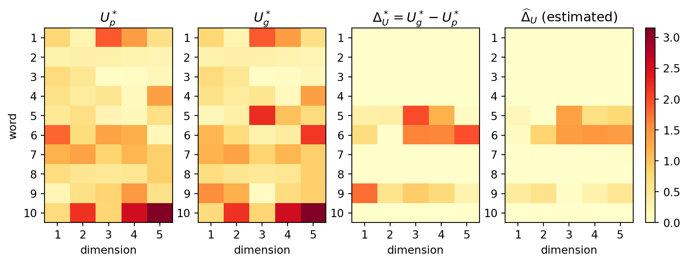
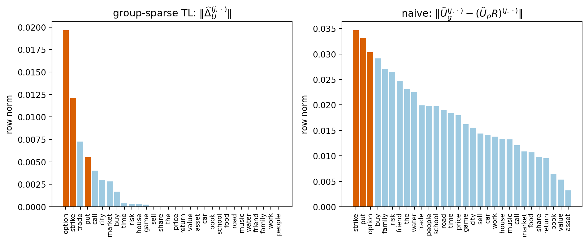

The implicit assumption underlying classical supervised learning is that training data and deployment data are drawn from the same joint distribution \(P(X, Y)\). In practice this assumption fails constantly: a model trained on radiology images from one hospital is deployed at another with different imaging equipment; a sentiment classifier trained on English reviews is applied to French text; a named-entity recognizer trained on newswire must handle social media. Collecting new labeled examples for each target setting is expensive, slow, and sometimes impossible. Transfer learning addresses this mismatch by reusing knowledge extracted from a source setting to accelerate and improve learning in a target setting. The empirical payoff is enormous: ImageNet pretraining reduced the error rate on diverse vision benchmarks by many percentage points compared to training from scratch Pan & Yang (2010), and language model pretraining yielded step-change improvements across virtually every NLP benchmark Devlin et al. (2019).
257.1 Formal Setup
A domain\(\mathcal{D} = \{\mathcal{X}, P(X)\}\) consists of a feature space \(\mathcal{X}\) and a marginal distribution \(P(X)\) over it. A task\(\mathcal{T} = \{\mathcal{Y}, f\}\) consists of a label space \(\mathcal{Y}\) and a predictive function \(f : \mathcal{X} \to \mathcal{Y}\), which in the supervised setting is learned from labeled pairs \(\{(x_i, y_i)\}\).
Let the source domain be \(\mathcal{D}_S = \{\mathcal{X}_S, P_S(X)\}\) with associated task \(\mathcal{T}_S = \{\mathcal{Y}_S, f_S\}\), and the target domain\(\mathcal{D}_T = \{\mathcal{X}_T, P_T(X)\}\) with task \(\mathcal{T}_T = \{\mathcal{Y}_T, f_T\}\). Transfer learning is the endeavor of improving \(f_T\), learned from possibly few labeled target examples, by exploiting knowledge derived from \((\mathcal{D}_S, \mathcal{T}_S)\).
The domains or tasks may differ in several ways, giving rise to distinct transfer scenarios:
Same domain, different label distribution (\(\mathcal{X}_S = \mathcal{X}_T\), \(P_S(X) \neq P_T(X)\)): classic covariate shift.
Different feature spaces (\(\mathcal{X}_S \neq \mathcal{X}_T\)): heterogeneous transfer, e.g., text in two languages.
Same features, different task (\(\mathcal{Y}_S \neq \mathcal{Y}_T\)): multi-task learning boundary.
Negative transfer is the failure mode in which exploiting source knowledge makes target performance worse than training from scratch. It occurs when source and target are sufficiently dissimilar that the source prior misleads the target optimizer, or when transfer forces a shared representation that fits neither domain well. Detecting and avoiding negative transfer is a central practical concern; strategies include domain similarity screening, per-layer transfer decisions, and regularization strength selection by cross-validation.
257.2 Strategy 1 — Linear Models: Regularization Toward Source Parameters
The simplest transfer mechanism for parametric models is parameter-space regularization. Suppose we have learned source parameters \(\mathbf{w}_\text{old}\) by minimizing a source loss \(\mathcal{L}_S(\mathbf{w})\) over labeled source data. When adapting to the target, instead of minimizing \(\mathcal{L}_T(\mathbf{w})\) without constraint, we solve
The quadratic penalty pulls the optimized parameters toward the source solution, preserving useful learned structure while allowing adaptation where the target data provides sufficient evidence. The scalar \(\lambda > 0\) controls the strength of transfer: large \(\lambda\) forces the target solution close to the source; small \(\lambda\) allows unconstrained adaptation.
A sparse variant replaces the \(\ell_2\) penalty with an \(\ell_1\) term:
This encourages the target parameters to match the source exactly on most coordinates while adapting on a sparse subset, which is appropriate when only a small fraction of features are relevant to the domain shift.
Bayesian interpretation. The \(\ell_2\) variant admits a clean probabilistic reading. Place a Gaussian prior \(\mathbf{w} \sim \mathcal{N}(\mathbf{w}_\text{old}, (2\lambda)^{-1} I)\) over target parameters. Maximum a posteriori estimation under this prior with a log-likelihood loss \(\mathcal{L}_T\) recovers exactly the penalized objective above. The source solution \(\mathbf{w}_\text{old}\) is the prior mean; the penalty strength \(\lambda\) encodes how confident we are that the source is a good prior for the target.
The following implementation wraps scikit-learn logistic regression to incorporate an \(\ell_2\) transfer penalty by shifting the penalty origin from zero to \(\mathbf{w}_\text{old}\).
On small target samples the transfer model typically outperforms the unconstrained baseline because the source prior prevents overfitting to the limited target labels.
257.3 Strategy 2: Unsupervised Transfer via Group-Sparse Matrix Factorization
The \(\ell_1\) shift penalty of Section 2 assumed a supervised target task with labels. Xu, Zhao, Bastani, and Bastani (2026) show that the same idea works for a purely unsupervised problem: learning word embeddings for a specialised domain when the domain corpus is tiny. Their motivating example is clinical text. On Wikipedia the word “positive” carries positive sentiment; in a nursing note it usually means a patient tested positive for a disease, which is bad news. Training embeddings from scratch on the small domain corpus gives unbiased but extremely noisy vectors. Reusing pretrained embeddings gives low-variance but biased vectors. The key empirical observation is that only a few words change meaning. Across the Wikipedia domains they measured (finance, math, computing, politics), the fraction of words with a domain-specific sense was between 0.01 and 0.12. That structure is exactly what a group-sparse penalty exploits.
257.3.1 Word embeddings as low-rank matrix sensing
Let the vocabulary have \(d\) words and let \(\Theta^* \in \mathbb{R}^{d \times d}\) be the symmetric matrix of word co-occurrence probabilities. Factorisation-based embedding methods (GloVe, and skip-gram with negative sampling, which Levy and Goldberg showed is an implicit factorisation of a shifted PMI matrix) posit that \(\Theta^*\) is low rank,
and the \(i\)-th row of \(U^*\) is the embedding of word \(i\). We observe \(n\) noisy linear measurements of \(\Theta^*\),
\[
X_i = \langle A_i, \Theta^* \rangle + \epsilon_i, \qquad i = 1, \dots, n,
\tag{257.1}\]
with \(\sigma\)-subgaussian noise. Writing \(\mathcal{A}(\Theta) = (\langle A_1, \Theta\rangle, \dots, \langle A_n, \Theta\rangle)^T\) for the linear operator, this is the classical matrix sensing model. For word co-occurrence the sensing matrices are basis matrices: a randomly drawn word pair \((j, k)\) corresponds to \(A_i = E_{jk}\) and \(X_i \in \{0, 1\}\) is a Bernoulli indicator with mean \(\Theta^{*(j,k)}\). Averaging the \(X_i\) that share the same \((j,k)\) recovers the empirical co-occurrence table, so the linear model contains a linear version of GloVe as a special case.
The natural nonconvex estimator is Burer and Monteiro’s factored least squares,
Two facts about Equation 257.2 matter below. First, \(U^*\) is identified only up to an orthogonal rotation \(R\), since \((U^*R)(U^*R)^T = \Theta^*\), so errors are measured after the best alignment: \(\ell(\widehat{U}, U^*) = \| \widehat{U} - U^* R_{(\widehat U, U^*)} \|_{2,1}\), where \(\|M\|_{2,1} = \sum_i \|M^{(i,\cdot)}\|_2\) is the sum of row norms. Second, under a restricted well-conditionedness (RWC) condition on \(\mathcal{A}\), all local minima of Equation 257.2 are global, which is why plain gradient descent works in practice. RWC needs roughly \(n \gtrsim d r\) measurements, which a large proxy corpus supplies but a small domain corpus does not.
257.3.2 Proxy data, gold data, and a row-sparse bias
Following the vocabulary of Bastani (2021), call the large general corpus the proxy data and the small domain corpus the gold data. Each has its own true embedding matrix, \(U_p^*\) and \(U_g^*\), and its own measurements,
with \(n_g \ll n_p\). The transfer assumption is that the bias matrix
\[
\Delta_U^* = U_g^* - U_p^*
\]
is row sparse: the index set \(J = \{ j : \|\Delta_U^{*(j,\cdot)}\| \neq 0 \}\) of words whose embedding actually moved has size \(s = |J| \ll d\). Row sparsity survives rotation (\(\Delta_U^* R\) has the same zero rows), so it is a well-defined property of the pair of domains and not an artefact of a particular basis.
Stage one is ordinary pretraining, and in practice one can simply download GloVe vectors for \(\widehat U_p\). Stage two refits on the gold data with a group lasso penalty that pulls every row of \(U_g\) toward the corresponding pretrained row, and lets a row move only when the gold data provide enough evidence to pay the penalty. Substituting \(\Delta_U = U_g - \widehat U_p\) gives the form that is actually optimised,
with \(\widehat U_g^{TL} = \widehat U_p + \widehat \Delta_U\). The penalty weight \(\lambda\) interpolates between the two naive baselines. As \(\lambda \to 0\) we recover the gold estimator, plain Burer-Monteiro on the domain corpus (unbiased, high variance). As \(\lambda \to \infty\) every row is frozen and we recover the proxy estimator, pretrained vectors used as-is (low variance, biased on the \(s\) shifted words). A subtle point the paper handles carefully is that, because \(\widehat U_p\) carries first-stage noise \(\nu = \widehat U_p - U_p^*\), the parameter that stage two actually targets is \(\widetilde \Delta_U = \Delta_U^* - \nu\), which is only approximately row sparse. The analysis shows that approximate sparsity is enough when \(n_p\) is large.
257.3.3 Solving stage two: proximal gradient with the \(\ell_{2,1}\) prox
Write \(f(\Delta) = \frac{1}{n}\|X - \mathcal{A}(UU^T)\|^2\) with \(U = \widehat U_p + \Delta\). The residual is \(\rho = \mathcal{A}(UU^T) - X \in \mathbb{R}^n\) and the adjoint of the sensing operator is \(\mathcal{A}^*(\rho) = \sum_i \rho_i A_i \in \mathbb{R}^{d \times d}\). Differentiating \(\langle A_i, UU^T \rangle\) with respect to \(U\) gives \((A_i + A_i^T) U\), so
\[
\nabla_\Delta f = \frac{2}{n} \big( G + G^T \big) U, \qquad G = \mathcal{A}^*(\rho) .
\tag{257.5}\]
The penalty is nonsmooth but its proximal operator is cheap and separable across rows. For a step size \(\eta\) and a row \(z \in \mathbb{R}^r\),
the group soft-threshold. The derivation is the usual one: for \(\|z\| \le \eta\lambda\) the subgradient condition \(0 \in w - z + \eta\lambda \partial\|w\|\) is satisfied by \(w = 0\); otherwise \(w\) is parallel to \(z\) and the first-order condition along that direction gives the shrinkage factor. Rows whose gradient signal is weaker than \(\eta\lambda\) collapse to exactly zero, so the estimator both debiases and selects the words whose meaning shifted. Proximal gradient descent alternates Equation 257.5 and Equation 257.6:
Repeat until the objective stops decreasing; pick \(\lambda\) by cross-validation on held-out gold measurements.
257.3.4 What the theory guarantees
The paper’s Theorem 1 bounds the aligned \(\ell_{2,1}\) error of \(\widehat U_g^{TL}\). With \(\lambda\) set at the order of \(\sigma_g \sqrt{\log(d)/n_g}\) and \(n_p\) large enough for RWC to hold on the proxy operator, with probability at least \(1 - \delta\),
The first term is the cost of estimating the row-sparse bias from gold data and scales with \(s^2\), not \(d^2\): a domain corpus of size \(n_g \gg \log d\) suffices. The second term is the ordinary variance of the pretrained embeddings and is negligible when \(n_p \gg d^2\). Compare the two baselines derived in the same paper:
The proxy bound contains the irreducible bias \(\|\Delta_U^*\|_{2,1}\) plus a rotation-misalignment term \(\omega\), so it never converges to \(U_g^*\) no matter how much pretraining data is used. The gold bound is consistent but needs \(d^2\)-scale data. Transfer learning gets the best of both when \(s \ll d\).
Two technical ingredients make the proof different from the group lasso literature. The objective is quartic in \(\Delta\), not quadratic, because \(U U^T\) is quadratic in \(U\). The authors therefore introduce a quadratic compatibility condition on \(\mathcal{A}_g\), which lower bounds \(\frac{1}{n}\|\mathcal{A}(\Delta U^{*T} + U^* \Delta^T + \Delta\Delta^T)\|^2\) on the cone \(\sum_{j \notin J}\|\Delta^{(j,\cdot)}\| \le 7 \sum_{j \in J}\|\Delta^{(j,\cdot)}\|\), and show that it follows from a restricted strong convexity condition that holds with high probability both for Gaussian sensing and for the Bernoulli word-pair sampling model. Second, since the objective is nonsmooth the usual Hessian arguments for “no spurious local minima” do not apply. Theorem 2 instead adapts Loh and Wainwright’s local-optima framework and proves that every local minimum of Equation 257.4 satisfies the same bound as Equation 257.7. Proximal gradient descent from \(\Delta = 0\) is therefore statistically safe even though the problem is nonconvex.
257.3.5 Replication on synthetic matrix sensing
The following experiments reproduce the qualitative content of the paper’s Figures 2, 3, 4 and 6 with a small, self-contained implementation. We generate \(U_p^*\) with standard normal entries, shift \(s\) randomly chosen rows by \(\mathrm{Uniform}[-a, a]\) noise to obtain \(U_g^*\), draw Gaussian sensing matrices, and compare the three estimators by the rotation-invariant error \(\|\Theta_g^* - \widehat U \widehat U^T\|_F\). Trial counts are reduced from the paper’s 100 to keep the chapter fast to render.
Core two-stage group-sparse transfer learning estimator
import numpy as npimport matplotlib.pyplot as pltrng = np.random.default_rng(2026)def gaussian_sensing(n, d, rng):"""Rows are vec(A_i) with i.i.d. N(0,1) entries."""return rng.standard_normal((n, d * d))def apply_A(A_mat, Theta):return A_mat @ Theta.ravel()def adjoint_A(A_mat, v, d):return (A_mat.T @ v).reshape(d, d)def spectral_init(A_mat, X, d, r): G = adjoint_A(A_mat, X, d) / A_mat.shape[0] G =0.5* (G + G.T) w, V = np.linalg.eigh(G) idx = np.argsort(w)[::-1][:r]return V[:, idx] * np.sqrt(np.clip(w[idx], 1e-12, None))def loss_grad(U, A_mat, X):"""f(U) = (1/n)||X - A(UU^T)||^2 and its gradient (eq. gstl-grad).""" n, d = A_mat.shape[0], U.shape[0] res = apply_A(A_mat, U @ U.T) - X G = adjoint_A(A_mat, res, d)return res @ res / n, (2.0/ n) * (G + G.T) @ Udef burer_monteiro(A_mat, X, d, r, iters=300):"""Stage one, and also the 'gold only' baseline.""" U = spectral_init(A_mat, X, d, r) step =0.05/max(np.linalg.norm(U, 2) **2, 1e-3)for _ inrange(iters): U = U - step * loss_grad(U, A_mat, X)[1]return Udef group_soft_threshold(D, tau):"""Row-wise prox of tau*||.||_2 (eq. gstl-prox).""" norms = np.linalg.norm(D, axis=1, keepdims=True)return D * np.clip(1.0- tau / np.maximum(norms, 1e-12), 0.0, None)def transfer_learn(U_p_hat, A_g, X_g, lam, iters=300):"""Stage two: proximal gradient on Delta (eq. gstl-delta).""" Delta = np.zeros_like(U_p_hat) step =0.05/max(np.linalg.norm(U_p_hat, 2) **2, 1e-3)for _ inrange(iters): g = loss_grad(U_p_hat + Delta, A_g, X_g)[1] Delta = group_soft_threshold(Delta - step * g, step * lam)return U_p_hat + Delta, Deltadef select_lambda(U_p_hat, A_g, X_g, grid, rng, frac=0.8):"""Hold-out selection of lambda on the gold measurements.""" perm = rng.permutation(A_g.shape[0]) cut =int(frac *len(perm)) tr, va = perm[:cut], perm[cut:] best, best_val = grid[0], np.inffor lam in grid: U_tl, _ = transfer_learn(U_p_hat, A_g[tr], X_g[tr], lam) val = np.mean((apply_A(A_g[va], U_tl @ U_tl.T) - X_g[va]) **2)if val < best_val: best, best_val = lam, valreturn bestdef frob_err(U, Theta_true):return np.linalg.norm(Theta_true - U @ U.T)def make_problem(d, r, s, a, n_p, n_g, sigma_p, sigma_g, rng): U_p = rng.standard_normal((d, r)) J = np.sort(rng.choice(d, size=s, replace=False)) Delta = np.zeros((d, r)) Delta[J] = rng.uniform(-a, a, size=(s, r)) U_g = U_p + Delta A_p, A_g = gaussian_sensing(n_p, d, rng), gaussian_sensing(n_g, d, rng) X_p = apply_A(A_p, U_p @ U_p.T) + sigma_p * rng.standard_normal(n_p) X_g = apply_A(A_g, U_g @ U_g.T) + sigma_g * rng.standard_normal(n_g)returndict(U_p=U_p, U_g=U_g, Delta=Delta, J=J, A_p=A_p, A_g=A_g, X_p=X_p, X_g=X_g)def run_three(prob, r, lam_grid, rng):"""Proxy, gold and transfer learning errors on one synthetic problem.""" d = prob["U_p"].shape[0] Theta_g = prob["U_g"] @ prob["U_g"].T U_p_hat = burer_monteiro(prob["A_p"], prob["X_p"], d, r) U_g_hat = burer_monteiro(prob["A_g"], prob["X_g"], d, r) lam = select_lambda(U_p_hat, prob["A_g"], prob["X_g"], lam_grid, rng) U_tl, Delta_hat = transfer_learn(U_p_hat, prob["A_g"], prob["X_g"], lam)returndict(proxy=frob_err(U_p_hat, Theta_g), gold=frob_err(U_g_hat, Theta_g), tl=frob_err(U_tl, Theta_g), lam=lam, Delta_hat=Delta_hat, U_p_hat=U_p_hat)
usingLinearAlgebra, Random# Sensing operator stored as an n x d^2 matrix of vec(A_i)apply_A(A, Θ) = A *vec(Θ)adjoint_A(A, v, d) =reshape(A'* v, d, d)functionspectral_init(A, X, d, r) G =adjoint_A(A, X, d) /size(A, 1) G = (G + G') /2 F =eigen(Symmetric(G)) idx =sortperm(F.values; rev =true)[1:r]return F.vectors[:, idx] .*sqrt.(max.(F.values[idx], 1e-12))'endfunctionloss_grad(U, A, X) n, d =size(A, 1), size(U, 1) res =apply_A(A, U * U') .- X G =adjoint_A(A, res, d)returndot(res, res) / n, (2/ n) * (G + G') * Uendfunctionburer_monteiro(A, X, d, r; iters =300) U =spectral_init(A, X, d, r) η =0.05/max(opnorm(U)^2, 1e-3)for _ in1:iters U -= η *loss_grad(U, A, X)[2]endreturn Uend# Row-wise group soft threshold: the prox of τ‖·‖₂ applied to each rowfunctiongroup_soft_threshold(D, τ) out =similar(D)for j inaxes(D, 1) nrm =norm(@view D[j, :]) out[j, :] =max(1- τ /max(nrm, 1e-12), 0) .* D[j, :]endreturn outendfunctiontransfer_learn(Up, Ag, Xg, λ; iters =300) Δ =zeros(size(Up)) η =0.05/max(opnorm(Up)^2, 1e-3)for _ in1:iters g =loss_grad(Up + Δ, Ag, Xg)[2] Δ =group_soft_threshold(Δ - η * g, η * λ)endreturn Up + Δ, Δend# Synthetic problem: s shifted rows out of drng =MersenneTwister(2026)d, r, s, a =20, 5, 2, 2.0np_, ng =5000, 50Up_true =randn(rng, d, r)J =randperm(rng, d)[1:s]Δ_true =zeros(d, r); Δ_true[J, :] = a .* (2.*rand(rng, s, r) .-1)Ug_true = Up_true + Δ_trueAp, Ag =randn(rng, np_, d * d), randn(rng, ng, d * d)Xp =apply_A(Ap, Up_true * Up_true') .+0.5.*randn(rng, np_)Xg =apply_A(Ag, Ug_true * Ug_true') .+0.5.*randn(rng, ng)Θg = Ug_true * Ug_true'Up_hat =burer_monteiro(Ap, Xp, d, r)Ug_hat =burer_monteiro(Ag, Xg, d, r)Utl, Δ_hat =transfer_learn(Up_hat, Ag, Xg, 8.0)err(U) =norm(Θg - U * U')println("proxy ", err(Up_hat), " gold ", err(Ug_hat), " TL ", err(Utl))println("true shifted rows ", sort(J), " recovered ",sort(sortperm(vec(mapslices(norm, Δ_hat; dims =2)); rev =true)[1:s]))
// Cargo.toml: nalgebra = "0.33", rand = "0.8", rand_distr = "0.4"usenalgebra::{DMatrix, DVector, SymmetricEigen};userand::{seq::SliceRandom, Rng, SeedableRng};userand_distr::StandardNormal;/// Sensing operator stored as n x d^2 with rows vec(A_i).fn apply_a(a:&DMatrix<f64>, theta:&DMatrix<f64>) -> DVector<f64>{let v =DVector::from_column_slice(theta.as_slice()); a * v}fn adjoint_a(a:&DMatrix<f64>, v:&DVector<f64>, d:usize) -> DMatrix<f64>{let w = a.transpose() * v;DMatrix::from_column_slice(d, d, w.as_slice())}fn spectral_init(a:&DMatrix<f64>, x:&DVector<f64>, d:usize, r:usize) -> DMatrix<f64>{let n = a.nrows() asf64;let g = adjoint_a(a, x, d) / n;let g = (&g + g.transpose()) *0.5;let eig =SymmetricEigen::new(g);letmut order:Vec<usize>= (0..d).collect(); order.sort_by(|&i,&j| eig.eigenvalues[j].partial_cmp(&eig.eigenvalues[i]).unwrap());letmut u =DMatrix::zeros(d, r);for (k,&i) in order.iter().take(r).enumerate() {let scale = eig.eigenvalues[i].max(1e-12).sqrt(); u.set_column(k,&(eig.eigenvectors.column(i) * scale));} u}/// Gradient of (1/n)||X - A(UU^T)||^2 with respect to U.fn grad(u:&DMatrix<f64>, a:&DMatrix<f64>, x:&DVector<f64>) -> DMatrix<f64>{let n = a.nrows() asf64;let d = u.nrows();let res = apply_a(a,&(u * u.transpose())) - x;let g = adjoint_a(a,&res, d); (&g + g.transpose()) * u * (2.0/ n)}fn burer_monteiro(a:&DMatrix<f64>, x:&DVector<f64>, d:usize, r:usize, iters:usize) -> DMatrix<f64>{letmut u = spectral_init(a, x, d, r);let step =0.05/ u.norm().powi(2).max(1e-3);for _ in0..iters { u -= grad(&u, a, x) * step;} u}/// Row-wise group soft threshold, the prox of tau*||.||_2.fn group_soft_threshold(delta:&mut DMatrix<f64>, tau:f64) {for j in0..delta.nrows() {let nrm = delta.row(j).norm().max(1e-12);let scale = (1.0- tau / nrm).max(0.0); delta.row_mut(j).scale_mut(scale);}}fn transfer_learn(up:&DMatrix<f64>, ag:&DMatrix<f64>, xg:&DVector<f64>, lam:f64, iters:usize)-> (DMatrix<f64>, DMatrix<f64>) {letmut delta =DMatrix::zeros(up.nrows(), up.ncols());let step =0.05/ up.norm().powi(2).max(1e-3);for _ in0..iters {let g = grad(&(up +&delta), ag, xg); delta -= g * step; group_soft_threshold(&mut delta, step * lam);} (up +&delta, delta)}fn randn(rng:&mutimpl Rng, rows:usize, cols:usize) -> DMatrix<f64>{DMatrix::from_fn(rows, cols,|_, _| rng.sample(StandardNormal))}fn main() {letmut rng =rand::rngs::StdRng::seed_from_u64(2026);let (d, r, s, a) = (20usize,5usize,2usize,2.0f64);let (n_p, n_g) = (5000usize,50usize);let up_true = randn(&mut rng, d, r);letmut idx:Vec<usize>= (0..d).collect(); idx.shuffle(&mut rng);let shifted:Vec<usize>= idx[..s].to_vec();letmut ug_true = up_true.clone();for&j in&shifted {for k in0..r { ug_true[(j, k)] += rng.gen_range(-a..a);}}let (ap, ag) = (randn(&mut rng, n_p, d * d), randn(&mut rng, n_g, d * d));let xp = apply_a(&ap,&(&up_true * up_true.transpose())) + randn(&mut rng, n_p,1).column(0) *0.5;let xg = apply_a(&ag,&(&ug_true * ug_true.transpose())) + randn(&mut rng, n_g,1).column(0) *0.5;let theta_g =&ug_true * ug_true.transpose();let up_hat = burer_monteiro(&ap,&xp, d, r,300);let ug_hat = burer_monteiro(&ag,&xg, d, r,300);let (utl, delta_hat) = transfer_learn(&up_hat,&ag,&xg,8.0,300);let err =|u:&DMatrix<f64>| (&theta_g - u * u.transpose()).norm();println!("proxy {:.2} gold {:.2} TL {:.2}", err(&up_hat), err(&ug_hat), err(&utl));letmut rows:Vec<(f64,usize)>= (0..d).map(|j| (delta_hat.row(j).norm(), j)).collect(); rows.sort_by(|x, y| y.0.partial_cmp(&x.0).unwrap());letmut top:Vec<usize>= rows.iter().take(s).map(|t| t.1).collect();letmut truth = shifted.clone(); top.sort(); truth.sort();println!("true shifted rows {:?} recovered {:?}", truth, top);}
The first experiment reproduces the paper’s toy illustration: \(d = 10\) words, \(r = 5\), and \(s = 3\) shifted rows. The fourth panel is new. It shows the estimated bias \(\widehat \Delta_U\) from stage two, which recovers the sparsity pattern almost exactly from fewer gold measurements than there are entries in \(\Theta_g^*\).
Code
toy = make_problem(d=10, r=5, s=3, a=2.0, n_p=5000, n_g=30, sigma_p=0.5, sigma_g=0.5, rng=rng)toy_out = run_three(toy, r=5, lam_grid=[0.5, 1, 2, 4, 8, 16], rng=rng)# Align the estimate with the truth (rotation ambiguity) before plottingdef procrustes(A, B):"""Orthogonal R minimising ||A - B R||_F.""" Uo, _, Vt = np.linalg.svd(B.T @ A)return Uo @ VtR = procrustes(toy["U_p"], toy_out["U_p_hat"])Delta_hat_aligned = toy_out["Delta_hat"] @ Rpanels = [(np.abs(toy["U_p"]), r"$U_p^*$"), (np.abs(toy["U_g"]), r"$U_g^*$"), (np.abs(toy["Delta"]), r"$\Delta_U^* = U_g^* - U_p^*$"), (np.abs(Delta_hat_aligned), r"$\widehat{\Delta}_U$(estimated)")]vmax =max(p[0].max() for p in panels)fig, axes = plt.subplots(1, 4, figsize=(10, 3.2))for ax, (M, title) inzip(axes, panels): im = ax.imshow(M, cmap="YlOrRd", vmin=0, vmax=vmax, aspect="auto") ax.set_title(title) ax.set_xlabel("dimension") ax.set_xticks(range(5)); ax.set_xticklabels(range(1, 6)) ax.set_yticks(range(10)); ax.set_yticklabels(range(1, 11))axes[0].set_ylabel("word")fig.colorbar(im, ax=axes, fraction=0.02, pad=0.02)plt.show()top = np.sort(np.argsort(-np.linalg.norm(toy_out["Delta_hat"], axis=1))[:3])print("true shifted words :", toy["J"] +1)print("top-3 rows of Delta_hat:", top +1)print(f"Frobenius error proxy {toy_out['proxy']:.2f} gold {toy_out['gold']:.2f} "f"TL {toy_out['tl']:.2f} (lambda = {toy_out['lam']})")

Figure 257.1: Toy example with d = 10 words, rank r = 5 and s = 3 shifted words. The true proxy embeddings (left), true gold embeddings (second), true bias (third) and the group-sparse estimate of the bias from only 30 gold measurements (right). Colour is absolute magnitude.
Next we replicate the four panels of the paper’s Figure 3, which vary the vocabulary size \(d\), the rank \(r\) and the sparsity \(s\) with a fixed data budget of \(n_p = 5000\) proxy and \(n_g = 50\) gold measurements.
Figure 257.2: Replication of Figure 3 of Xu et al. (2026). Frobenius error of the gold-domain co-occurrence matrix for the proxy, gold and transfer learning (TL) estimators, averaged over trials with 95% confidence intervals, log scale. The gold estimator fails badly with only 50 measurements, the proxy estimator is bounded below by the domain bias, and TL is best in every panel. The advantage shrinks when many words shift (bottom right).
The last two experiments trace how the three estimators respond to more gold data (the paper’s Figure 4) and how sensitive transfer learning is to the tuning parameter (their Figure 6).
Figure 257.3: Left: replication of Figure 4. As the gold sample grows the gold estimator eventually catches up with transfer learning, while the proxy estimator stays flat at its bias floor. Right: replication of Figure 6. Transfer learning beats both baselines across an order of magnitude of lambda around the cross-validated value, so the method is forgiving of imperfect tuning in the low-data regime (d = 20, r = 5, s = 2, one problem instance).
257.3.6 Replication on word co-occurrence with a named vocabulary
The Gaussian sensing model above is the paper’s theoretical setting. The setting that motivates the paper is word-pair sampling: each of \(n\) draws from a corpus yields a pair \((j, k)\) with probability \(\Theta^{*(j,k)}\), and the observation matrix is the basis matrix \(E_{jk}\). Averaging the indicators gives the empirical co-occurrence table \(\widehat X = C / n\) with multinomial counts \(C\), and the least-squares objective becomes the full-matrix Frobenius loss \(\|\widehat X - U U^T\|_F^2\), a linear GloVe without the log transform and weighting. This is the “word embedding” special case for which Corollary 1 of the paper gives the same \(\sqrt{s^2 r / n_g}\) rate.
We build a 30-word vocabulary and a rank-4 general-English co-occurrence structure with one latent “finance” component. In the gold domain three words, “put”, “option” and “strike”, take on their finance senses: their rows move onto the finance component while every other row stays fixed. The proxy corpus is two million word pairs and the gold corpus is a few thousand. Besides the estimation error we ask an interpretability question the paper raises in its Table 5.3: does ranking words by \(\|\widehat\Delta_U^{(j,\cdot)}\|\) recover the words whose meaning changed? We compare against the naive approach of fitting gold embeddings separately, aligning them to the proxy embeddings by Procrustes rotation, and ranking words by the row-wise difference.
Synthetic co-occurrence model with three finance-shifted words
words = ["the", "market", "price", "buy", "sell", "share", "put", "option","strike", "call", "asset", "trade", "value", "risk", "return","house", "car", "food", "road", "city", "book", "school", "water","music", "game", "friend", "family", "time", "work", "people"]d_w, r_w =len(words), 4shifted = ["put", "option", "strike"]J_w = np.array([words.index(w) for w in shifted])finance = ["market", "price", "buy", "sell", "share", "call", "asset","trade", "value", "risk", "return"]rng_w = np.random.default_rng(7)U_p_w = rng_w.gamma(shape=1.5, scale=1.0, size=(d_w, r_w)) # nonnegative rowsU_p_w[[words.index(w) for w in finance], 0] *=3.0# finance componentDelta_w = np.zeros((d_w, r_w))for j in J_w: # move onto finance Delta_w[j] = np.array([4.0, 0.0, 0.0, 0.0]) -0.6* U_p_w[j]U_g_w = U_p_w + Delta_wTheta_p_w, Theta_g_w = U_p_w @ U_p_w.T, U_g_w @ U_g_w.TT_p_w, T_g_w = Theta_p_w / Theta_p_w.sum(), Theta_g_w / Theta_g_w.sum()def sample_counts(Theta, n, rng):"""n word-pair draws from the co-occurrence distribution."""return rng.multinomial(n, (Theta / Theta.sum()).ravel()).reshape(Theta.shape)def factorize_full(Xhat, r, iters=2000):"""Burer-Monteiro on a fully observed table: min ||Xhat - UU^T||_F^2.""" w, V = np.linalg.eigh(0.5* (Xhat + Xhat.T)) idx = np.argsort(w)[::-1][:r] U = V[:, idx] * np.sqrt(np.clip(w[idx], 1e-12, None)) step =0.05/max(np.linalg.norm(U, 2) **2, 1e-9)for _ inrange(iters): U -= step *4.0* (U @ U.T - Xhat) @ Ureturn Udef transfer_full(U_p_hat, Xhat_g, lam, iters=2000):"""Stage two on a fully observed gold table.""" Delta = np.zeros_like(U_p_hat) step =0.05/max(np.linalg.norm(U_p_hat, 2) **2, 1e-9)for _ inrange(iters): U = U_p_hat + Delta g =4.0* (U @ U.T - Xhat_g) @ U Delta = group_soft_threshold(Delta - step * g, step * lam)return U_p_hat + Delta, Deltadef select_lambda_counts(U_p_hat, counts, grid, rng, frac=0.8):"""Hold-out lambda selection by binomial thinning of the gold counts.""" tr = rng.binomial(counts, frac) va = counts - tr Xtr, Xva = tr / tr.sum(), va / va.sum() best, best_val = grid[0], np.inffor lam in grid: U, _ = transfer_full(U_p_hat, Xtr, lam) val = np.linalg.norm(U @ U.T - Xva)if val < best_val: best, best_val = lam, valreturn bestlam_grid_w = [1e-4, 2e-4, 5e-4, 1e-3, 2e-3, 5e-3]X_p_w = sample_counts(Theta_p_w, 2_000_000, rng_w) /2_000_000U_p_hat_w = factorize_full(X_p_w, r_w)print(f"proxy fit on its own domain: {np.linalg.norm(U_p_hat_w @ U_p_hat_w.T - T_p_w):.1e}")
proxy fit on its own domain: 4.0e-04
Code
n_g_w =2000counts_g = sample_counts(Theta_g_w, n_g_w, rng_w)X_g_w = counts_g / n_g_wlam_w = select_lambda_counts(U_p_hat_w, counts_g, lam_grid_w, rng_w)U_tl_w, Delta_hat_w = transfer_full(U_p_hat_w, X_g_w, lam_w)U_g_hat_w = factorize_full(X_g_w, r_w)R_w = procrustes(U_g_hat_w, U_p_hat_w)naive_w = np.linalg.norm(U_g_hat_w - U_p_hat_w @ R_w, axis=1)tl_w = np.linalg.norm(Delta_hat_w, axis=1)fig, axes = plt.subplots(1, 2, figsize=(10, 4.2), sharey=False)for ax, score, title in [(axes[0], tl_w, r"group-sparse TL: $\|\widehat\Delta_U^{(j,\cdot)}\|$"), (axes[1], naive_w, r"naive: $\|\widehat U_g^{(j,\cdot)} - (\widehat U_p R)^{(j,\cdot)}\|$")]: order = np.argsort(-score) cols = ["#d95f02"if i in J_w else"#9ecae1"for i in order] ax.bar(range(d_w), score[order], color=cols) ax.set_xticks(range(d_w)) ax.set_xticklabels([words[i] for i in order], rotation=90, fontsize=8) ax.set_title(title) ax.set_ylabel("row norm")plt.tight_layout()plt.show()err =lambda U: np.linalg.norm(U @ U.T - T_g_w)print(f"lambda selected : {lam_w:.0e}")print(f"nonzero rows in Delta_hat : {(tl_w >1e-9).sum()} of {d_w}")print(f"top-3 words, TL : {[words[i] for i in np.argsort(-tl_w)[:3]]}")print(f"top-3 words, naive : {[words[i] for i in np.argsort(-naive_w)[:3]]}")print(f"error on gold table proxy {err(U_p_hat_w):.2e} gold {err(U_g_hat_w):.2e} TL {err(U_tl_w):.2e}")

Figure 257.4: Which words changed meaning? Row norms of the estimated bias from group-sparse transfer learning (left) and of the aligned difference between separately fitted gold and proxy embeddings (right), from 2000 gold word pairs. Orange bars are the three words whose meaning truly shifted. The group-sparse estimate sets most of the vocabulary to exactly zero and places the shifted words at or near the top; the naive difference also ranks them highly on this draw but is dense, so it offers no natural cutoff between shifted and unshifted words.
Sweeping the gold corpus size shows the same phase structure as the sensing experiments for the estimation error. On the identification task the Procrustes-aligned naive difference turns out to be a respectable baseline on this small vocabulary, which is worth knowing: the paper’s larger identification gains over Mittens and CCA on real Wikipedia articles come from a vocabulary of thousands of words, where a dense difference vector is far noisier than it is here.
Figure 257.5: Word co-occurrence model as the gold corpus grows. Left: error on the gold co-occurrence table. Right: precision at 3 for identifying the three shifted words, for the group-sparse estimate and the naive aligned difference (mean of 5 draws). Both rankings improve with data and are broadly comparable on this small synthetic vocabulary, so the practical gain of the group-sparse estimate here is the sparse, auditable bias matrix and the lower estimation error rather than a large identification advantage.
257.3.7 Extension to GloVe and empirical results on Wikipedia
Nothing in stage two depends on the loss being linear least squares. For the GloVe objective with word vectors \(U_i\), context vectors \(V_j\), biases \(b_i, c_j\) and weighting function \(f\), the paper proposes
where \(\widehat U_p\) is any pretrained embedding matrix such as public GloVe vectors. The same row-wise soft threshold applies after each gradient step on the GloVe loss.
On 37 domain-specific Wikipedia articles (finance, math, computing, politics) the two-stage estimator, seeded with pretrained GloVe vectors, roughly halved the out-of-sample co-occurrence prediction error of the gold estimator and cut the proxy estimator’s error by a factor of about 25 to 40. On the task of identifying which words carry a domain-specific sense (ground truth from Wiktionary labels), its \(F_1\) was the highest of the compared methods in three of four domains, ahead of Mittens (Dingwall and Potts, 2018), canonical correlation analysis and kernel CCA, and its GloVe variant Equation 257.8 was highest in the fourth. The top-ranked words are interpretable: for the “put option” article the estimator surfaces put, strike, option, shares and securities; for “prime number” it surfaces prime, formula, number and theorem.
257.3.8 When to use this strategy
Regime. Use it when the domain corpus is far too small to train embeddings from scratch (roughly \(n_g \ll d^2\) word pairs) but the domain is a variation on a well-resourced source, so that most words keep their meaning. The theory needs \(n_g \gg \log d\) only.
What you get beyond accuracy. The zero pattern of \(\widehat \Delta_U\) is a ranked, auditable list of the words whose usage differs in the target domain. This is often the deliverable a domain expert cares about, and it is unavailable from fine-tuning heuristics, which move every parameter.
Tuning. Pick \(\lambda\) by cross-validation on held-out gold co-occurrences; the paper and the replication above both show a wide plateau of good values in the low-data regime. Larger \(\lambda\) is safer when you expect very few shifted words.
Relationship to Section 2. This is the unsupervised analogue of the \(\ell_1\) shift penalty, with a row-group \(\ell_{2,1}\) penalty because an embedding row is the natural unit of “meaning”. The same structure applies to any low-rank model: adjacency matrices of social networks (verified ties as gold, platform ties as proxy), supplier-buyer graphs, and user-item preference matrices in recommendation.
Limitations. The guarantees assume a shared rank \(r\), a symmetric factorisation, and a small \(s\). When many words shift (the \(s = 15\) panel above) the advantage over pretrained vectors shrinks toward the proxy bias, and when the domain differs wholesale the method degrades gracefully to the gold estimator rather than helping.
When \(\mathcal{X}_S \neq \mathcal{X}_T\), direct parameter reuse is impossible. The canonical example is cross-lingual transfer: source training data is annotated English clinical records; target data are Chinese-language records. The feature vectors occupy entirely different high-dimensional spaces.
The standard remedy is to find a mapping \(\phi_S : \mathcal{X}_S \to \mathcal{Z}\) and \(\phi_T : \mathcal{X}_T \to \mathcal{Z}\) into a shared embedding space \(\mathcal{Z}\) such that semantically equivalent items map to nearby points. For bilingual word embeddings the mapping is learned by aligning word vectors across languages using a small bilingual lexicon or even in a fully unsupervised manner (Lample et al. 2018 via adversarial alignment). The concept “cardiovascular disease” in English and “心血管疾病” in Chinese map to nearby vectors in \(\mathcal{Z}\); a classifier trained in \(\mathcal{Z}\) using English-labeled data then applies directly to Chinese input without any Chinese labels.
Formally, the shared representation learning objective couples the source and target embedding networks:
where \(\Omega\) is an alignment term enforcing that \(\phi_S\) and \(\phi_T\) map to a common geometry — for instance, encouraging the cosine similarity of cross-lingual synonym pairs to be high, or minimizing the Wasserstein distance between the marginal distributions \(\phi_S(P_S)\) and \(\phi_T(P_T)\).
For tabular data with overlapping but not identical features, a softer version is instance weighting: re-weight source instances by \(P_T(x) / P_S(x)\) (importance weighting) so that the source loss reflects the target distribution. This is equivalent to minimizing the target loss using only source labels, avoiding the need for any labeled target data.
257.5 Strategy 4 — Deep Models: Feature Extraction and Fine-Tuning
Deep neural networks learn hierarchical representations. For convolutional networks trained on ImageNet, early convolutional layers detect local edge orientations and color blobs — features that are useful across virtually all visual domains. Intermediate layers assemble textures and parts; final layers encode object-class specifics, which are heavily dataset-dependent. Yosinski et al. (2014) quantified this gradient of transferability empirically, showing that features from layers 1–3 of a network trained on one ImageNet split transfer almost perfectly to another split, while features from layers 6–7 become increasingly task-specific.
This hierarchy motivates two operating modes:
Feature extraction. Freeze all layers of the pretrained network up to (and including) some layer \(k\); replace the final head with a new randomly initialized head suited to \(\mathcal{T}_T\); train only the new head. The frozen layers act as a fixed feature extractor \(\phi : \mathcal{X}_T \to \mathbb{R}^d\). With a linear head this collapses to kernel regression in the representation space — fast to train and resistant to overfitting when labeled target data is scarce.
Fine-tuning. Initialize all layers from the pretrained weights; train the entire network (or selected layers) on the target task with a small learning rate. Fine-tuning allows the representation to adapt to target-specific statistics but risks catastrophic forgetting — overwriting source knowledge when the target dataset is small or the learning rate is large.
import torchimport torch.nn as nnimport torchvision.models as modelsimport torchvision.transforms as Tfrom torchvision.datasets import CIFAR10from torch.utils.data import DataLoader, Subsettorch.manual_seed(0)device = torch.device("cpu")transform = T.Compose([ T.Resize(224), T.ToTensor(), T.Normalize([0.485, 0.456, 0.406], [0.229, 0.224, 0.225]),])# Small subset to keep runtime short on CPUtrain_ds = CIFAR10(root="/tmp/cifar", train=True, download=True, transform=transform)test_ds = CIFAR10(root="/tmp/cifar", train=False, download=True, transform=transform)subset_idx_train =list(range(0, len(train_ds), 100)) # 500 samplessubset_idx_test =list(range(0, len(test_ds), 50)) # 200 samplestrain_loader = DataLoader(Subset(train_ds, subset_idx_train), batch_size=16, shuffle=True)test_loader = DataLoader(Subset(test_ds, subset_idx_test), batch_size=32, shuffle=False)# Load pretrained ResNet-18; freeze everything except the final FC layermodel = models.resnet18(weights=models.ResNet18_Weights.DEFAULT)for param in model.parameters(): param.requires_grad =False# Replace head: 512 -> 10 (CIFAR-10 classes)model.fc = nn.Linear(model.fc.in_features, 10)model = model.to(device)optimizer = torch.optim.Adam(model.fc.parameters(), lr=1e-3)criterion = nn.CrossEntropyLoss()def train_epoch(model, loader, optimizer): model.train() total_loss, correct, n =0.0, 0, 0for x, y in loader: x, y = x.to(device), y.to(device) optimizer.zero_grad() logits = model(x) loss = criterion(logits, y) loss.backward() optimizer.step() total_loss += loss.item() *len(y) correct += (logits.argmax(1) == y).sum().item() n +=len(y)return total_loss / n, correct / ndef evaluate(model, loader): model.eval() correct, n =0, 0with torch.no_grad():for x, y in loader: x, y = x.to(device), y.to(device) correct += (model(x).argmax(1) == y).sum().item() n +=len(y)return correct / nfor epoch inrange(3): loss, tr_acc = train_epoch(model, train_loader, optimizer) te_acc = evaluate(model, test_loader)print(f"Epoch {epoch+1} loss={loss:.3f} train_acc={tr_acc:.3f} test_acc={te_acc:.3f}")
With only 500 training examples and three epochs, the frozen ResNet-18 feature extractor achieves substantially higher accuracy than a randomly initialized network trained for the same number of steps, demonstrating that the ImageNet representation generalizes far beyond its source domain.
257.6 Strategy 5 — Unsupervised Domain Adaptation
A challenging but practically common setting is unsupervised domain adaptation: the source provides labeled pairs \(\mathcal{D}_1 = \{(x_i, y_i)\}_{i=1}^{n_S}\) while the target provides only unlabeled instances \(\mathcal{D}_2 = \{x_j\}_{j=1}^{n_T}\). The goal is to learn a classifier that performs well on target without any target labels.
The dominant approach trains a shared feature extractor \(\phi_\theta\) and classifier \(f_\theta\) to minimize
The discrepancy term pushes the extracted features to be domain-invariant — indistinguishable whether they came from source or target — while the classification term ensures that the features still carry label-predictive signal.
Three popular discrepancy measures are:
Maximum Mean Discrepancy (MMD). Let \(\mathcal{H}\) be a reproducing kernel Hilbert space with kernel \(k\). Then
Minimizing the squared MMD in the feature space \(\phi_\theta\) encourages identical feature means across domains. Deep Adaptation Network (Long et al. 2015) applies MMD to multiple layers simultaneously.
Adversarial domain adaptation. A binary domain discriminator \(D_\psi\) is trained to distinguish source from target features, while \(\phi_\theta\) is trained adversarially to fool it:
Gradient Reversal Layer (Ganin & Lempitsky 2015) implements this with a sign-flipped gradient during backpropagation through \(\phi_\theta\) toward \(D_\psi\), making the entire system end-to-end differentiable.
CORAL (Correlation Alignment). Instead of aligning means, CORAL aligns second-order statistics (covariance matrices) of source and target features:
where \(C_S, C_T \in \mathbb{R}^{d \times d}\) are the feature covariance matrices and \(\|\cdot\|_F\) is the Frobenius norm. This is computationally inexpensive and requires no hyperparameter tuning beyond the weighting \(\lambda\).
257.7 Fine-Tuning Practical Guide
Layer-wise learning rate decay. Because early layers need minimal adaptation, it is standard practice to assign progressively smaller learning rates to earlier layers:
where \(L\) is the total number of layers and \(\ell\) is the layer index from the input. The top layers (closest to output) receive the full learning rate \(\eta_\text{top}\); each preceding group is reduced by factor \(\alpha\). In PyTorch this is implemented by passing per-parameter-group learning rates to the optimizer:
Catastrophic forgetting. When a network is fine-tuned on a small target dataset with a large learning rate, the weights drift far from their pretrained values and the source representations are overwritten. Mitigation strategies include:
Elastic Weight Consolidation (EWC, Kirkpatrick et al. 2017): add an \(\ell_2\) penalty toward pretrained weights, weighted by the Fisher information matrix diagonal, which selectively protects parameters that were most important for the source task.
Gradual unfreezing: start by training only the head for several epochs; then unfreeze the top block; then the next, and so on. This prevents gradients from early epochs destroying carefully tuned low-level features.
Label smoothing and dropout increase regularization and reduce overfitting on target.
Which layers to freeze. The decision depends on the similarity between source and target. Ben-David et al. (2010) formalize this through \(\mathcal{H}\Delta\mathcal{H}\)-divergence: when source and target differ sharply (large divergence), deeper layers must adapt. Empirically, for natural image fine-tuning on small datasets, freezing layers 1–3 and fine-tuning layers 4–top is a reliable default. For highly dissimilar domains (medical images from photographic ImageNet pretraining), fine-tuning all layers with aggressive layer-wise decay often outperforms partial freezing.
257.8 Theoretical Perspective
Ben-David et al. (2010) prove a generalization bound for domain adaptation. Let \(h^* = \arg\min_h \varepsilon_S(h) + \varepsilon_T(h)\) be the ideal joint hypothesis, \(\lambda^* = \varepsilon_S(h^*) + \varepsilon_T(h^*)\) its combined error, and \(d_{\mathcal{H}\Delta\mathcal{H}}(\mathcal{D}_S, \mathcal{D}_T)\) the domain divergence. Then for any \(h\) in hypothesis class \(\mathcal{H}\):
This bound decomposes target error into three terms: how well \(h\) classifies source data; the distributional divergence between domains; and an irreducible floor \(\lambda^*\) representing how much the best shared classifier must sacrifice. Transfer learning is beneficial when the source error is low (strong source model), the divergence is small (related domains), and \(\lambda^*\) is small (both tasks are jointly solvable). Negative transfer corresponds to large \(d_{\mathcal{H}\Delta\mathcal{H}}\) that outweighs the first term’s benefit.
257.9 References
Pan, S. J., & Yang, Q. (2010). A Survey on Transfer Learning. IEEE Transactions on Knowledge and Data Engineering, 22(10), 1345–1359. https://doi.org/10.1109/TKDE.2009.191
Yosinski, J., Clune, J., Bengio, Y., & Lipson, H. (2014). How transferable are features in deep neural networks? Advances in Neural Information Processing Systems 27. https://arxiv.org/abs/1411.1792
Devlin, J., Chang, M.-W., Lee, K., & Toutanova, K. (2019). BERT: Pre-training of Deep Bidirectional Transformers for Language Understanding. NAACL-HLT 2019. https://arxiv.org/abs/1810.04805
Ben-David, S., Blitzer, J., Crammer, K., Kulesza, A., Pereira, F., & Vaughan, J. W. (2010). A theory of learning from different domains. Machine Learning, 79(1–2), 151–175. https://doi.org/10.1007/s10994-009-5152-4
Ganin, Y., & Lempitsky, V. (2015). Unsupervised Domain Adaptation by Backpropagation. ICML 2015. https://arxiv.org/abs/1409.7495
Kirkpatrick, J., Pascanu, R., Rabinowitz, N., et al. (2017). Overcoming catastrophic forgetting in neural networks. PNAS, 114(13), 3521–3526. https://doi.org/10.1073/pnas.1611835114
Long, M., Cao, Y., Wang, J., & Jordan, M. I. (2015). Learning Transferable Features with Deep Adaptation Networks. ICML 2015. https://arxiv.org/abs/1502.02791
Xu, K., Zhao, X., Bastani, H., & Bastani, O. (2026). Group-Sparse Matrix Factorization for Transfer Learning of Word Embeddings. Management Science. https://doi.org/10.1287/mnsc.2022.01740
Xu, K., Zhao, X., Bastani, H., & Bastani, O. (2021). Group-Sparse Matrix Factorization for Transfer Learning of Word Embeddings. Proceedings of the 38th International Conference on Machine Learning, PMLR 139, 11603–11612. https://proceedings.mlr.press/v139/xu21l.html
Bastani, H. (2021). Predicting with Proxies: Transfer Learning in High Dimension. Management Science, 67(5), 2964–2984. https://doi.org/10.1287/mnsc.2020.3729
Yuan, M., & Lin, Y. (2006). Model Selection and Estimation in Regression with Grouped Variables. Journal of the Royal Statistical Society, Series B, 68(1), 49–67. https://doi.org/10.1111/j.1467-9868.2005.00532.x
Lounici, K., Pontil, M., van de Geer, S., & Tsybakov, A. B. (2011). Oracle Inequalities and Optimal Inference under Group Sparsity. Annals of Statistics, 39(4), 2164–2204. https://doi.org/10.1214/11-AOS896
Burer, S., & Monteiro, R. D. C. (2003). A Nonlinear Programming Algorithm for Solving Semidefinite Programs via Low-Rank Factorization. Mathematical Programming, 95(2), 329–357. https://doi.org/10.1007/s10107-002-0352-8
Negahban, S., & Wainwright, M. J. (2011). Estimation of (Near) Low-Rank Matrices with Noise and High-Dimensional Scaling. Annals of Statistics, 39(2), 1069–1097. https://doi.org/10.1214/10-AOS850
Ge, R., Jin, C., & Zheng, Y. (2017). No Spurious Local Minima in Nonconvex Low Rank Problems: A Unified Geometric Analysis. Proceedings of the 34th International Conference on Machine Learning, PMLR 70, 1233–1242. https://proceedings.mlr.press/v70/ge17a.html
Loh, P.-L., & Wainwright, M. J. (2015). Regularized M-estimators with Nonconvexity: Statistical and Algorithmic Theory for Local Optima. Journal of Machine Learning Research, 16, 559–616. https://jmlr.org/papers/v16/loh15a.html
Pennington, J., Socher, R., & Manning, C. D. (2014). GloVe: Global Vectors for Word Representation. Proceedings of EMNLP 2014, 1532–1543. https://doi.org/10.3115/v1/D14-1162
Levy, O., & Goldberg, Y. (2014). Neural Word Embedding as Implicit Matrix Factorization. Advances in Neural Information Processing Systems 27. https://papers.nips.cc/paper/2014/hash/feab05aa91085b7a8012516bc3533958-Abstract.html
Dingwall, N., & Potts, C. (2018). Mittens: An Extension of GloVe for Learning Domain-Specialized Representations. Proceedings of NAACL-HLT 2018 (Short Papers), 212–217. https://doi.org/10.18653/v1/N18-2034
Source Code
# Transfer Learning: Foundations and Strategies {#sec-transfer-learning}The implicit assumption underlying classical supervised learning is that training data and deployment data are drawn from the same joint distribution $P(X, Y)$. In practice this assumption fails constantly: a model trained on radiology images from one hospital is deployed at another with different imaging equipment; a sentiment classifier trained on English reviews is applied to French text; a named-entity recognizer trained on newswire must handle social media. Collecting new labeled examples for each target setting is expensive, slow, and sometimes impossible. Transfer learning addresses this mismatch by reusing knowledge extracted from a source setting to accelerate and improve learning in a target setting. The empirical payoff is enormous: ImageNet pretraining reduced the error rate on diverse vision benchmarks by many percentage points compared to training from scratch Pan & Yang (2010), and language model pretraining yielded step-change improvements across virtually every NLP benchmark Devlin et al. (2019).## Formal SetupA **domain** $\mathcal{D} = \{\mathcal{X}, P(X)\}$ consists of a feature space $\mathcal{X}$ and a marginal distribution $P(X)$ over it. A **task** $\mathcal{T} = \{\mathcal{Y}, f\}$ consists of a label space $\mathcal{Y}$ and a predictive function $f : \mathcal{X} \to \mathcal{Y}$, which in the supervised setting is learned from labeled pairs $\{(x_i, y_i)\}$.Let the **source domain** be $\mathcal{D}_S = \{\mathcal{X}_S, P_S(X)\}$ with associated task $\mathcal{T}_S = \{\mathcal{Y}_S, f_S\}$, and the **target domain** $\mathcal{D}_T = \{\mathcal{X}_T, P_T(X)\}$ with task $\mathcal{T}_T = \{\mathcal{Y}_T, f_T\}$. Transfer learning is the endeavor of improving $f_T$, learned from possibly few labeled target examples, by exploiting knowledge derived from $(\mathcal{D}_S, \mathcal{T}_S)$.The domains or tasks may differ in several ways, giving rise to distinct transfer scenarios:- **Same domain, different label distribution** ($\mathcal{X}_S = \mathcal{X}_T$, $P_S(X) \neq P_T(X)$): classic covariate shift.- **Different feature spaces** ($\mathcal{X}_S \neq \mathcal{X}_T$): heterogeneous transfer, e.g., text in two languages.- **Same features, different task** ($\mathcal{Y}_S \neq \mathcal{Y}_T$): multi-task learning boundary.- **Unlabeled target** ($\mathcal{Y}_T$ entirely unobserved): unsupervised domain adaptation.**Negative transfer** is the failure mode in which exploiting source knowledge makes target performance worse than training from scratch. It occurs when source and target are sufficiently dissimilar that the source prior misleads the target optimizer, or when transfer forces a shared representation that fits neither domain well. Detecting and avoiding negative transfer is a central practical concern; strategies include domain similarity screening, per-layer transfer decisions, and regularization strength selection by cross-validation.## Strategy 1 — Linear Models: Regularization Toward Source ParametersThe simplest transfer mechanism for parametric models is parameter-space regularization. Suppose we have learned source parameters $\mathbf{w}_\text{old}$ by minimizing a source loss $\mathcal{L}_S(\mathbf{w})$ over labeled source data. When adapting to the target, instead of minimizing $\mathcal{L}_T(\mathbf{w})$ without constraint, we solve$$\min_{\mathbf{w}} \; \mathcal{L}_T(\mathbf{w}) + \lambda \|\mathbf{w} - \mathbf{w}_\text{old}\|_2^2$$The quadratic penalty pulls the optimized parameters toward the source solution, preserving useful learned structure while allowing adaptation where the target data provides sufficient evidence. The scalar $\lambda > 0$ controls the strength of transfer: large $\lambda$ forces the target solution close to the source; small $\lambda$ allows unconstrained adaptation.A sparse variant replaces the $\ell_2$ penalty with an $\ell_1$ term:$$\min_{\mathbf{w}} \; \mathcal{L}_T(\mathbf{w}) + \lambda \|\mathbf{w} - \mathbf{w}_\text{old}\|_1$$This encourages the target parameters to match the source exactly on most coordinates while adapting on a sparse subset, which is appropriate when only a small fraction of features are relevant to the domain shift.**Bayesian interpretation.** The $\ell_2$ variant admits a clean probabilistic reading. Place a Gaussian prior $\mathbf{w} \sim \mathcal{N}(\mathbf{w}_\text{old}, (2\lambda)^{-1} I)$ over target parameters. Maximum a posteriori estimation under this prior with a log-likelihood loss $\mathcal{L}_T$ recovers exactly the penalized objective above. The source solution $\mathbf{w}_\text{old}$ is the prior mean; the penalty strength $\lambda$ encodes how confident we are that the source is a good prior for the target.The following implementation wraps scikit-learn logistic regression to incorporate an $\ell_2$ transfer penalty by shifting the penalty origin from zero to $\mathbf{w}_\text{old}$.```pythonimport numpy as npfrom sklearn.datasets import make_classificationfrom sklearn.linear_model import LogisticRegressionfrom sklearn.preprocessing import StandardScalerfrom sklearn.metrics import accuracy_scorerng = np.random.default_rng(42)# Source domain: well-separated binary problemX_src, y_src = make_classification( n_samples=400, n_features=20, n_informative=10, random_state=0)# Target domain: same features, slight distribution shift (fewer samples)X_tgt, y_tgt = make_classification( n_samples=60, n_features=20, n_informative=10, random_state=7, flip_y=0.1)scaler = StandardScaler().fit(X_src)X_src_s = scaler.transform(X_src)X_tgt_s = scaler.transform(X_tgt)# Train source modelsrc_model = LogisticRegression(C=1.0, max_iter=1000, random_state=0)src_model.fit(X_src_s, y_src)w_old = src_model.coef_[0]def transfer_logistic(X_tgt_train, y_tgt_train, w_old, lam=1.0, n_iter=500):"""Gradient descent minimizing CE + lambda * ||w - w_old||^2.""" w = w_old.copy() b =0.0 n =len(y_tgt_train) lr =0.05for _ inrange(n_iter): logits = X_tgt_train @ w + b probs =1.0/ (1.0+ np.exp(-logits)) err = probs - y_tgt_train grad_w = X_tgt_train.T @ err / n +2* lam * (w - w_old) grad_b = err.mean() w -= lr * grad_w b -= lr * grad_breturn w, b# Split target into train/testsplit =40X_tt, y_tt = X_tgt_s[:split], y_tgt[:split]X_te, y_te = X_tgt_s[split:], y_tgt[split:]w_transfer, b_transfer = transfer_logistic(X_tt, y_tt, w_old, lam=0.5)logits_te = X_te @ w_transfer + b_transferpreds_transfer = (logits_te >0).astype(int)acc_transfer = accuracy_score(y_te, preds_transfer)# Baseline: target-only logistic (no transfer)baseline = LogisticRegression(C=2.0, max_iter=1000, random_state=0)baseline.fit(X_tt, y_tt)acc_baseline = accuracy_score(y_te, baseline.predict(X_te))print(f"Transfer accuracy : {acc_transfer:.3f}")print(f"Baseline accuracy : {acc_baseline:.3f}")```On small target samples the transfer model typically outperforms the unconstrained baseline because the source prior prevents overfitting to the limited target labels.## Strategy 2: Unsupervised Transfer via Group-Sparse Matrix FactorizationThe $\ell_1$ shift penalty of Section 2 assumed a supervised target task with labels. Xu, Zhao, Bastani, and Bastani (2026) show that the same idea works for a purely *unsupervised* problem: learning word embeddings for a specialised domain when the domain corpus is tiny. Their motivating example is clinical text. On Wikipedia the word "positive" carries positive sentiment; in a nursing note it usually means a patient tested positive for a disease, which is bad news. Training embeddings from scratch on the small domain corpus gives unbiased but extremely noisy vectors. Reusing pretrained embeddings gives low-variance but biased vectors. The key empirical observation is that only a *few* words change meaning. Across the Wikipedia domains they measured (finance, math, computing, politics), the fraction of words with a domain-specific sense was between 0.01 and 0.12. That structure is exactly what a group-sparse penalty exploits.### Word embeddings as low-rank matrix sensingLet the vocabulary have $d$ words and let $\Theta^* \in \mathbb{R}^{d \times d}$ be the symmetric matrix of word co-occurrence probabilities. Factorisation-based embedding methods (GloVe, and skip-gram with negative sampling, which Levy and Goldberg showed is an implicit factorisation of a shifted PMI matrix) posit that $\Theta^*$ is low rank,$$\Theta^* = U^* U^{*T}, \qquad U^* \in \mathbb{R}^{d \times r}, \quad r \ll d,$$and the $i$-th row of $U^*$ is the embedding of word $i$. We observe $n$ noisy linear measurements of $\Theta^*$,$$X_i = \langle A_i, \Theta^* \rangle + \epsilon_i, \qquad i = 1, \dots, n,$$ {#eq-gstl-sensing}with $\sigma$-subgaussian noise. Writing $\mathcal{A}(\Theta) = (\langle A_1, \Theta\rangle, \dots, \langle A_n, \Theta\rangle)^T$ for the linear operator, this is the classical *matrix sensing* model. For word co-occurrence the sensing matrices are basis matrices: a randomly drawn word pair $(j, k)$ corresponds to $A_i = E_{jk}$ and $X_i \in \{0, 1\}$ is a Bernoulli indicator with mean $\Theta^{*(j,k)}$. Averaging the $X_i$ that share the same $(j,k)$ recovers the empirical co-occurrence table, so the linear model contains a linear version of GloVe as a special case.The natural nonconvex estimator is Burer and Monteiro's factored least squares,$$\widehat{U} = \arg\min_{U \in \mathbb{R}^{d \times r}} \frac{1}{n} \| X - \mathcal{A}(U U^T) \|^2 .$$ {#eq-gstl-bm}Two facts about @eq-gstl-bm matter below. First, $U^*$ is identified only up to an orthogonal rotation $R$, since $(U^*R)(U^*R)^T = \Theta^*$, so errors are measured after the best alignment: $\ell(\widehat{U}, U^*) = \| \widehat{U} - U^* R_{(\widehat U, U^*)} \|_{2,1}$, where $\|M\|_{2,1} = \sum_i \|M^{(i,\cdot)}\|_2$ is the sum of row norms. Second, under a restricted well-conditionedness (RWC) condition on $\mathcal{A}$, all local minima of @eq-gstl-bm are global, which is why plain gradient descent works in practice. RWC needs roughly $n \gtrsim d r$ measurements, which a large proxy corpus supplies but a small domain corpus does not.### Proxy data, gold data, and a row-sparse biasFollowing the vocabulary of Bastani (2021), call the large general corpus the **proxy** data and the small domain corpus the **gold** data. Each has its own true embedding matrix, $U_p^*$ and $U_g^*$, and its own measurements,$$X_p = \mathcal{A}_p(U_p^* U_p^{*T}) + \epsilon_p, \qquad X_g = \mathcal{A}_g(U_g^* U_g^{*T}) + \epsilon_g,$$with $n_g \ll n_p$. The transfer assumption is that the bias matrix$$\Delta_U^* = U_g^* - U_p^*$$is **row sparse**: the index set $J = \{ j : \|\Delta_U^{*(j,\cdot)}\| \neq 0 \}$ of words whose embedding actually moved has size $s = |J| \ll d$. Row sparsity survives rotation ($\Delta_U^* R$ has the same zero rows), so it is a well-defined property of the pair of domains and not an artefact of a particular basis.The proposed estimator has two stages:$$\begin{aligned}\widehat{U}_p &= \arg\min_{U_p} \frac{1}{n_p} \| X_p - \mathcal{A}_p(U_p U_p^T) \|^2, \\\widehat{U}_g^{TL} &= \arg\min_{U_g : \|U_g - \widehat U_p\|_{2,1} \le 2L} \frac{1}{n_g} \| X_g - \mathcal{A}_g(U_g U_g^T) \|^2 + \lambda \| U_g - \widehat{U}_p \|_{2,1} .\end{aligned}$$ {#eq-gstl-two-stage}Stage one is ordinary pretraining, and in practice one can simply download GloVe vectors for $\widehat U_p$. Stage two refits on the gold data with a group lasso penalty that pulls every row of $U_g$ toward the corresponding pretrained row, and lets a row move only when the gold data provide enough evidence to pay the penalty. Substituting $\Delta_U = U_g - \widehat U_p$ gives the form that is actually optimised,$$\widehat{\Delta}_U = \arg\min_{\Delta_U : \|\Delta_U\|_{2,1} \le 2L} \frac{1}{n_g} \Big\| X_g - \mathcal{A}_g\big( (\widehat U_p + \Delta_U)(\widehat U_p + \Delta_U)^T \big) \Big\|^2 + \lambda \| \Delta_U \|_{2,1},$$ {#eq-gstl-delta}with $\widehat U_g^{TL} = \widehat U_p + \widehat \Delta_U$. The penalty weight $\lambda$ interpolates between the two naive baselines. As $\lambda \to 0$ we recover the **gold estimator**, plain Burer-Monteiro on the domain corpus (unbiased, high variance). As $\lambda \to \infty$ every row is frozen and we recover the **proxy estimator**, pretrained vectors used as-is (low variance, biased on the $s$ shifted words). A subtle point the paper handles carefully is that, because $\widehat U_p$ carries first-stage noise $\nu = \widehat U_p - U_p^*$, the parameter that stage two actually targets is $\widetilde \Delta_U = \Delta_U^* - \nu$, which is only *approximately* row sparse. The analysis shows that approximate sparsity is enough when $n_p$ is large.### Solving stage two: proximal gradient with the $\ell_{2,1}$ proxWrite $f(\Delta) = \frac{1}{n}\|X - \mathcal{A}(UU^T)\|^2$ with $U = \widehat U_p + \Delta$. The residual is $\rho = \mathcal{A}(UU^T) - X \in \mathbb{R}^n$ and the adjoint of the sensing operator is $\mathcal{A}^*(\rho) = \sum_i \rho_i A_i \in \mathbb{R}^{d \times d}$. Differentiating $\langle A_i, UU^T \rangle$ with respect to $U$ gives $(A_i + A_i^T) U$, so$$\nabla_\Delta f = \frac{2}{n} \big( G + G^T \big) U, \qquad G = \mathcal{A}^*(\rho) .$$ {#eq-gstl-grad}The penalty is nonsmooth but its proximal operator is cheap and separable across rows. For a step size $\eta$ and a row $z \in \mathbb{R}^r$,$$\operatorname{prox}_{\eta \lambda \|\cdot\|_2}(z) = \arg\min_{w} \tfrac{1}{2}\|w - z\|^2 + \eta\lambda \|w\|_2 = \Big( 1 - \frac{\eta \lambda}{\|z\|_2} \Big)_+ z,$$ {#eq-gstl-prox}the **group soft-threshold**. The derivation is the usual one: for $\|z\| \le \eta\lambda$ the subgradient condition $0 \in w - z + \eta\lambda \partial\|w\|$ is satisfied by $w = 0$; otherwise $w$ is parallel to $z$ and the first-order condition along that direction gives the shrinkage factor. Rows whose gradient signal is weaker than $\eta\lambda$ collapse to exactly zero, so the estimator both debiases and *selects* the words whose meaning shifted. Proximal gradient descent alternates @eq-gstl-grad and @eq-gstl-prox:1. Initialise $\Delta \leftarrow 0$ (equivalently $U_g \leftarrow \widehat U_p$).2. Gradient step on the smooth part: $\Delta \leftarrow \Delta - \eta \nabla_\Delta f$.3. Row-wise soft threshold: $\Delta^{(j,\cdot)} \leftarrow (1 - \eta\lambda / \|\Delta^{(j,\cdot)}\|)_+ \Delta^{(j,\cdot)}$.4. Repeat until the objective stops decreasing; pick $\lambda$ by cross-validation on held-out gold measurements.### What the theory guaranteesThe paper's Theorem 1 bounds the aligned $\ell_{2,1}$ error of $\widehat U_g^{TL}$. With $\lambda$ set at the order of $\sigma_g \sqrt{\log(d)/n_g}$ and $n_p$ large enough for RWC to hold on the proxy operator, with probability at least $1 - \delta$,$$\ell(\widehat U_g^{TL}, U_g^*) = \mathcal{O}\!\left( \sqrt{\frac{\sigma_g^2 \, s^2 \,(r + \log(d^2/\delta))}{n_g}} + \sqrt{\frac{\sigma_p^2 \,(r d^2 + d \log(1/\delta))}{n_p}} \right).$$ {#eq-gstl-bound}The first term is the cost of estimating the row-sparse bias from gold data and scales with $s^2$, not $d^2$: a domain corpus of size $n_g \gg \log d$ suffices. The second term is the ordinary variance of the pretrained embeddings and is negligible when $n_p \gg d^2$. Compare the two baselines derived in the same paper:| Estimator | Error bound (leading order) | Data it needs ||---|---|---|| Transfer learning (two-stage) | $\sqrt{s^2 r / n_g} + \sqrt{r d^2 / n_p}$ | $n_g \gg \log d$, $n_p \gg d^2$ || Gold only (Burer-Monteiro on domain data) | $\sqrt{r d^2 / n_g}$ | $n_g \gg d^2$ || Proxy only (pretrained vectors) | $\|\Delta_U^*\|_{2,1} + \omega + \sqrt{r d^2 / n_p}$ | never consistent for $U_g^*$ |The proxy bound contains the irreducible bias $\|\Delta_U^*\|_{2,1}$ plus a rotation-misalignment term $\omega$, so it never converges to $U_g^*$ no matter how much pretraining data is used. The gold bound is consistent but needs $d^2$-scale data. Transfer learning gets the best of both when $s \ll d$.Two technical ingredients make the proof different from the group lasso literature. The objective is quartic in $\Delta$, not quadratic, because $U U^T$ is quadratic in $U$. The authors therefore introduce a *quadratic compatibility condition* on $\mathcal{A}_g$, which lower bounds $\frac{1}{n}\|\mathcal{A}(\Delta U^{*T} + U^* \Delta^T + \Delta\Delta^T)\|^2$ on the cone $\sum_{j \notin J}\|\Delta^{(j,\cdot)}\| \le 7 \sum_{j \in J}\|\Delta^{(j,\cdot)}\|$, and show that it follows from a restricted strong convexity condition that holds with high probability both for Gaussian sensing and for the Bernoulli word-pair sampling model. Second, since the objective is nonsmooth the usual Hessian arguments for "no spurious local minima" do not apply. Theorem 2 instead adapts Loh and Wainwright's local-optima framework and proves that *every* local minimum of @eq-gstl-delta satisfies the same bound as @eq-gstl-bound. Proximal gradient descent from $\Delta = 0$ is therefore statistically safe even though the problem is nonconvex.### Replication on synthetic matrix sensingThe following experiments reproduce the qualitative content of the paper's Figures 2, 3, 4 and 6 with a small, self-contained implementation. We generate $U_p^*$ with standard normal entries, shift $s$ randomly chosen rows by $\mathrm{Uniform}[-a, a]$ noise to obtain $U_g^*$, draw Gaussian sensing matrices, and compare the three estimators by the rotation-invariant error $\|\Theta_g^* - \widehat U \widehat U^T\|_F$. Trial counts are reduced from the paper's 100 to keep the chapter fast to render.::: {.panel-tabset}## Python```{python}#| label: gstl-core#| code-summary: "Core two-stage group-sparse transfer learning estimator"import numpy as npimport matplotlib.pyplot as pltrng = np.random.default_rng(2026)def gaussian_sensing(n, d, rng):"""Rows are vec(A_i) with i.i.d. N(0,1) entries."""return rng.standard_normal((n, d * d))def apply_A(A_mat, Theta):return A_mat @ Theta.ravel()def adjoint_A(A_mat, v, d):return (A_mat.T @ v).reshape(d, d)def spectral_init(A_mat, X, d, r): G = adjoint_A(A_mat, X, d) / A_mat.shape[0] G =0.5* (G + G.T) w, V = np.linalg.eigh(G) idx = np.argsort(w)[::-1][:r]return V[:, idx] * np.sqrt(np.clip(w[idx], 1e-12, None))def loss_grad(U, A_mat, X):"""f(U) = (1/n)||X - A(UU^T)||^2 and its gradient (eq. gstl-grad).""" n, d = A_mat.shape[0], U.shape[0] res = apply_A(A_mat, U @ U.T) - X G = adjoint_A(A_mat, res, d)return res @ res / n, (2.0/ n) * (G + G.T) @ Udef burer_monteiro(A_mat, X, d, r, iters=300):"""Stage one, and also the 'gold only' baseline.""" U = spectral_init(A_mat, X, d, r) step =0.05/max(np.linalg.norm(U, 2) **2, 1e-3)for _ inrange(iters): U = U - step * loss_grad(U, A_mat, X)[1]return Udef group_soft_threshold(D, tau):"""Row-wise prox of tau*||.||_2 (eq. gstl-prox).""" norms = np.linalg.norm(D, axis=1, keepdims=True)return D * np.clip(1.0- tau / np.maximum(norms, 1e-12), 0.0, None)def transfer_learn(U_p_hat, A_g, X_g, lam, iters=300):"""Stage two: proximal gradient on Delta (eq. gstl-delta).""" Delta = np.zeros_like(U_p_hat) step =0.05/max(np.linalg.norm(U_p_hat, 2) **2, 1e-3)for _ inrange(iters): g = loss_grad(U_p_hat + Delta, A_g, X_g)[1] Delta = group_soft_threshold(Delta - step * g, step * lam)return U_p_hat + Delta, Deltadef select_lambda(U_p_hat, A_g, X_g, grid, rng, frac=0.8):"""Hold-out selection of lambda on the gold measurements.""" perm = rng.permutation(A_g.shape[0]) cut =int(frac *len(perm)) tr, va = perm[:cut], perm[cut:] best, best_val = grid[0], np.inffor lam in grid: U_tl, _ = transfer_learn(U_p_hat, A_g[tr], X_g[tr], lam) val = np.mean((apply_A(A_g[va], U_tl @ U_tl.T) - X_g[va]) **2)if val < best_val: best, best_val = lam, valreturn bestdef frob_err(U, Theta_true):return np.linalg.norm(Theta_true - U @ U.T)def make_problem(d, r, s, a, n_p, n_g, sigma_p, sigma_g, rng): U_p = rng.standard_normal((d, r)) J = np.sort(rng.choice(d, size=s, replace=False)) Delta = np.zeros((d, r)) Delta[J] = rng.uniform(-a, a, size=(s, r)) U_g = U_p + Delta A_p, A_g = gaussian_sensing(n_p, d, rng), gaussian_sensing(n_g, d, rng) X_p = apply_A(A_p, U_p @ U_p.T) + sigma_p * rng.standard_normal(n_p) X_g = apply_A(A_g, U_g @ U_g.T) + sigma_g * rng.standard_normal(n_g)returndict(U_p=U_p, U_g=U_g, Delta=Delta, J=J, A_p=A_p, A_g=A_g, X_p=X_p, X_g=X_g)def run_three(prob, r, lam_grid, rng):"""Proxy, gold and transfer learning errors on one synthetic problem.""" d = prob["U_p"].shape[0] Theta_g = prob["U_g"] @ prob["U_g"].T U_p_hat = burer_monteiro(prob["A_p"], prob["X_p"], d, r) U_g_hat = burer_monteiro(prob["A_g"], prob["X_g"], d, r) lam = select_lambda(U_p_hat, prob["A_g"], prob["X_g"], lam_grid, rng) U_tl, Delta_hat = transfer_learn(U_p_hat, prob["A_g"], prob["X_g"], lam)returndict(proxy=frob_err(U_p_hat, Theta_g), gold=frob_err(U_g_hat, Theta_g), tl=frob_err(U_tl, Theta_g), lam=lam, Delta_hat=Delta_hat, U_p_hat=U_p_hat)```## Julia```juliausingLinearAlgebra, Random# Sensing operator stored as an n x d^2 matrix of vec(A_i)apply_A(A, Θ) = A *vec(Θ)adjoint_A(A, v, d) =reshape(A'* v, d, d)functionspectral_init(A, X, d, r) G =adjoint_A(A, X, d) /size(A, 1) G = (G + G') /2 F =eigen(Symmetric(G)) idx =sortperm(F.values; rev =true)[1:r]return F.vectors[:, idx] .*sqrt.(max.(F.values[idx], 1e-12))'endfunctionloss_grad(U, A, X) n, d =size(A, 1), size(U, 1) res =apply_A(A, U * U') .- X G =adjoint_A(A, res, d)returndot(res, res) / n, (2/ n) * (G + G') * Uendfunctionburer_monteiro(A, X, d, r; iters =300) U =spectral_init(A, X, d, r) η =0.05/max(opnorm(U)^2, 1e-3)for _ in1:iters U -= η *loss_grad(U, A, X)[2]endreturn Uend# Row-wise group soft threshold: the prox of τ‖·‖₂ applied to each rowfunctiongroup_soft_threshold(D, τ) out =similar(D)for j inaxes(D, 1) nrm =norm(@view D[j, :]) out[j, :] =max(1- τ /max(nrm, 1e-12), 0) .* D[j, :]endreturn outendfunctiontransfer_learn(Up, Ag, Xg, λ; iters =300) Δ =zeros(size(Up)) η =0.05/max(opnorm(Up)^2, 1e-3)for _ in1:iters g =loss_grad(Up + Δ, Ag, Xg)[2] Δ =group_soft_threshold(Δ - η * g, η * λ)endreturn Up + Δ, Δend# Synthetic problem: s shifted rows out of drng =MersenneTwister(2026)d, r, s, a =20, 5, 2, 2.0np_, ng =5000, 50Up_true =randn(rng, d, r)J =randperm(rng, d)[1:s]Δ_true =zeros(d, r); Δ_true[J, :] = a .* (2.*rand(rng, s, r) .-1)Ug_true = Up_true + Δ_trueAp, Ag =randn(rng, np_, d * d), randn(rng, ng, d * d)Xp =apply_A(Ap, Up_true * Up_true') .+0.5.*randn(rng, np_)Xg =apply_A(Ag, Ug_true * Ug_true') .+0.5.*randn(rng, ng)Θg = Ug_true * Ug_true'Up_hat =burer_monteiro(Ap, Xp, d, r)Ug_hat =burer_monteiro(Ag, Xg, d, r)Utl, Δ_hat =transfer_learn(Up_hat, Ag, Xg, 8.0)err(U) =norm(Θg - U * U')println("proxy ", err(Up_hat), " gold ", err(Ug_hat), " TL ", err(Utl))println("true shifted rows ", sort(J), " recovered ",sort(sortperm(vec(mapslices(norm, Δ_hat; dims =2)); rev =true)[1:s]))```## Rust```rust// Cargo.toml: nalgebra ="0.33", rand ="0.8", rand_distr ="0.4"use nalgebra::{DMatrix, DVector, SymmetricEigen};use rand::{seq::SliceRandom, Rng, SeedableRng};use rand_distr::StandardNormal;/// Sensing operator stored as n x d^2 with rows vec(A_i).fn apply_a(a:&DMatrix<f64>, theta:&DMatrix<f64>) -> DVector<f64> { let v = DVector::from_column_slice(theta.as_slice()); a * v}fn adjoint_a(a:&DMatrix<f64>, v:&DVector<f64>, d: usize) -> DMatrix<f64> { let w =a.transpose() * v; DMatrix::from_column_slice(d, d, w.as_slice())}fn spectral_init(a:&DMatrix<f64>, x:&DVector<f64>, d: usize, r: usize) -> DMatrix<f64> { let n =a.nrows() as f64; let g =adjoint_a(a, x, d) / n; let g = (&g +g.transpose()) *0.5; let eig = SymmetricEigen::new(g); let mut order: Vec<usize>= (0..d).collect();order.sort_by(|&i, &j| eig.eigenvalues[j].partial_cmp(&eig.eigenvalues[i]).unwrap()); let mut u = DMatrix::zeros(d, r);for (k, &i) inorder.iter().take(r).enumerate() { let scale = eig.eigenvalues[i].max(1e-12).sqrt();u.set_column(k, &(eig.eigenvectors.column(i) * scale)); } u}/// Gradient of (1/n)||X -A(UU^T)||^2 with respect to U.fn grad(u:&DMatrix<f64>, a:&DMatrix<f64>, x:&DVector<f64>) -> DMatrix<f64> { let n =a.nrows() as f64; let d =u.nrows(); let res =apply_a(a, &(u *u.transpose())) - x; let g =adjoint_a(a, &res, d); (&g +g.transpose()) * u * (2.0/ n)}fn burer_monteiro(a:&DMatrix<f64>, x:&DVector<f64>, d: usize, r: usize, iters: usize) -> DMatrix<f64> { let mut u =spectral_init(a, x, d, r); let step =0.05/u.norm().powi(2).max(1e-3);for _ in0..iters { u -=grad(&u, a, x) * step; } u}/// Row-wise group soft threshold, the prox of tau*||.||_2.fn group_soft_threshold(delta:&mut DMatrix<f64>, tau: f64) {for j in0..delta.nrows() { let nrm =delta.row(j).norm().max(1e-12); let scale = (1.0- tau / nrm).max(0.0);delta.row_mut(j).scale_mut(scale); }}fn transfer_learn(up:&DMatrix<f64>, ag:&DMatrix<f64>, xg:&DVector<f64>, lam: f64, iters: usize)-> (DMatrix<f64>, DMatrix<f64>) { let mut delta = DMatrix::zeros(up.nrows(), up.ncols()); let step =0.05/up.norm().powi(2).max(1e-3);for _ in0..iters { let g =grad(&(up +&delta), ag, xg); delta -= g * step;group_soft_threshold(&mut delta, step * lam); } (up +&delta, delta)}fn randn(rng:&mut impl Rng, rows: usize, cols: usize) -> DMatrix<f64> { DMatrix::from_fn(rows, cols, |_, _|rng.sample(StandardNormal))}fn main() { let mut rng = rand::rngs::StdRng::seed_from_u64(2026);let (d, r, s, a) = (20usize, 5usize, 2usize, 2.0f64);let (n_p, n_g) = (5000usize, 50usize); let up_true =randn(&mut rng, d, r); let mut idx: Vec<usize>= (0..d).collect();idx.shuffle(&mut rng); let shifted: Vec<usize>= idx[..s].to_vec(); let mut ug_true =up_true.clone();for&j in&shifted {for k in0..r { ug_true[(j, k)] +=rng.gen_range(-a..a); } }let (ap, ag) = (randn(&mut rng, n_p, d * d), randn(&mut rng, n_g, d * d)); let xp =apply_a(&ap, &(&up_true *up_true.transpose())) +randn(&mut rng, n_p, 1).column(0) *0.5; let xg =apply_a(&ag, &(&ug_true *ug_true.transpose())) +randn(&mut rng, n_g, 1).column(0) *0.5; let theta_g =&ug_true *ug_true.transpose(); let up_hat =burer_monteiro(&ap, &xp, d, r, 300); let ug_hat =burer_monteiro(&ag, &xg, d, r, 300);let (utl, delta_hat) =transfer_learn(&up_hat, &ag, &xg, 8.0, 300); let err =|u:&DMatrix<f64>| (&theta_g - u *u.transpose()).norm(); println!("proxy {:.2} gold {:.2} TL {:.2}", err(&up_hat), err(&ug_hat), err(&utl)); let mut rows: Vec<(f64, usize)>= (0..d).map(|j| (delta_hat.row(j).norm(), j)).collect();rows.sort_by(|x, y|y.0.partial_cmp(&x.0).unwrap()); let mut top: Vec<usize>=rows.iter().take(s).map(|t| t.1).collect(); let mut truth =shifted.clone();top.sort(); truth.sort(); println!("true shifted rows {:?} recovered {:?}", truth, top);}```:::The first experiment reproduces the paper's toy illustration: $d = 10$ words, $r = 5$, and $s = 3$ shifted rows. The fourth panel is new. It shows the *estimated* bias $\widehat \Delta_U$ from stage two, which recovers the sparsity pattern almost exactly from fewer gold measurements than there are entries in $\Theta_g^*$.```{python}#| label: fig-gstl-heatmaps#| fig-cap: "Toy example with d = 10 words, rank r = 5 and s = 3 shifted words. The true proxy embeddings (left), true gold embeddings (second), true bias (third) and the group-sparse estimate of the bias from only 30 gold measurements (right). Colour is absolute magnitude."#| fig-width: 10#| fig-height: 3.2#| out-width: "100%"toy = make_problem(d=10, r=5, s=3, a=2.0, n_p=5000, n_g=30, sigma_p=0.5, sigma_g=0.5, rng=rng)toy_out = run_three(toy, r=5, lam_grid=[0.5, 1, 2, 4, 8, 16], rng=rng)# Align the estimate with the truth (rotation ambiguity) before plottingdef procrustes(A, B):"""Orthogonal R minimising ||A - B R||_F.""" Uo, _, Vt = np.linalg.svd(B.T @ A)return Uo @ VtR = procrustes(toy["U_p"], toy_out["U_p_hat"])Delta_hat_aligned = toy_out["Delta_hat"] @ Rpanels = [(np.abs(toy["U_p"]), r"$U_p^*$"), (np.abs(toy["U_g"]), r"$U_g^*$"), (np.abs(toy["Delta"]), r"$\Delta_U^* = U_g^* - U_p^*$"), (np.abs(Delta_hat_aligned), r"$\widehat{\Delta}_U$(estimated)")]vmax =max(p[0].max() for p in panels)fig, axes = plt.subplots(1, 4, figsize=(10, 3.2))for ax, (M, title) inzip(axes, panels): im = ax.imshow(M, cmap="YlOrRd", vmin=0, vmax=vmax, aspect="auto") ax.set_title(title) ax.set_xlabel("dimension") ax.set_xticks(range(5)); ax.set_xticklabels(range(1, 6)) ax.set_yticks(range(10)); ax.set_yticklabels(range(1, 11))axes[0].set_ylabel("word")fig.colorbar(im, ax=axes, fraction=0.02, pad=0.02)plt.show()top = np.sort(np.argsort(-np.linalg.norm(toy_out["Delta_hat"], axis=1))[:3])print("true shifted words :", toy["J"] +1)print("top-3 rows of Delta_hat:", top +1)print(f"Frobenius error proxy {toy_out['proxy']:.2f} gold {toy_out['gold']:.2f} "f"TL {toy_out['tl']:.2f} (lambda = {toy_out['lam']})")```Next we replicate the four panels of the paper's Figure 3, which vary the vocabulary size $d$, the rank $r$ and the sparsity $s$ with a fixed data budget of $n_p = 5000$ proxy and $n_g = 50$ gold measurements.```{python}#| label: fig-gstl-bars#| fig-cap: "Replication of Figure 3 of Xu et al. (2026). Frobenius error of the gold-domain co-occurrence matrix for the proxy, gold and transfer learning (TL) estimators, averaged over trials with 95% confidence intervals, log scale. The gold estimator fails badly with only 50 measurements, the proxy estimator is bounded below by the domain bias, and TL is best in every panel. The advantage shrinks when many words shift (bottom right)."#| fig-width: 8#| fig-height: 6#| out-width: "100%"configs = [(20, 5, 2), (20, 10, 2), (40, 5, 2), (40, 5, 15)]lam_grid = [0.5, 1, 2, 4, 8, 16]n_trials =6bar_results = {}for (d, r, s) in configs: errs = []for _ inrange(n_trials): prob = make_problem(d, r, s, 2.0, 5000, 50, 0.5, 0.5, rng) o = run_three(prob, r, lam_grid, rng) errs.append((o["proxy"], o["gold"], o["tl"])) bar_results[(d, r, s)] = np.array(errs)fig, axes = plt.subplots(2, 2, figsize=(8, 6))for ax, (cfg, E) inzip(axes.ravel(), bar_results.items()): m, ci = E.mean(0), 1.96* E.std(0, ddof=1) / np.sqrt(len(E)) ax.bar(["Proxy", "Gold", "TL"], m, yerr=ci, capsize=4, color=["#f4a742", "#f4a742", "#d95f02"]) ax.set_yscale("log") ax.set_ylabel("Frobenius error") ax.set_title(f"d = {cfg[0]}, r = {cfg[1]}, s = {cfg[2]}")plt.tight_layout()plt.show()for cfg, E in bar_results.items(): m = E.mean(0)print(f"d={cfg[0]:>2} r={cfg[1]:>2} s={cfg[2]:>2} "f"proxy {m[0]:6.2f} gold {m[1]:6.2f} TL {m[2]:6.2f}")```The last two experiments trace how the three estimators respond to more gold data (the paper's Figure 4) and how sensitive transfer learning is to the tuning parameter (their Figure 6).```{python}#| label: fig-gstl-curves#| fig-cap: "Left: replication of Figure 4. As the gold sample grows the gold estimator eventually catches up with transfer learning, while the proxy estimator stays flat at its bias floor. Right: replication of Figure 6. Transfer learning beats both baselines across an order of magnitude of lambda around the cross-validated value, so the method is forgiving of imperfect tuning in the low-data regime (d = 20, r = 5, s = 2, one problem instance)."#| fig-width: 9#| fig-height: 3.6#| out-width: "100%"ngs = [20, 50, 100, 200, 500, 1000]curve = []for n_g in ngs: errs = []for _ inrange(4): prob = make_problem(20, 5, 2, 2.0, 5000, n_g, 0.5, 0.5, rng) o = run_three(prob, 5, lam_grid, rng) errs.append((o["proxy"], o["gold"], o["tl"])) curve.append(np.mean(errs, axis=0))curve = np.array(curve)lams = [0.25, 0.5, 1, 2, 4, 8, 16, 32]prob = make_problem(20, 5, 2, 2.0, 5000, 50, 0.5, 0.5, rng)Theta_g = prob["U_g"] @ prob["U_g"].TU_p_hat = burer_monteiro(prob["A_p"], prob["X_p"], 20, 5)U_g_hat = burer_monteiro(prob["A_g"], prob["X_g"], 20, 5)rob = [frob_err(transfer_learn(U_p_hat, prob["A_g"], prob["X_g"], lam)[0], Theta_g)for lam in lams]fig, (ax1, ax2) = plt.subplots(1, 2, figsize=(9, 3.6))for k, (name, col) inenumerate([("Proxy", "#e6ab02"), ("Gold", "#1f77b4"), ("TL", "#d95f02")]): ax1.plot(ngs, curve[:, k], "s--", color=col, label=name)ax1.set_yscale("log"); ax1.set_xlabel(r"$n_g$"); ax1.set_ylabel("Frobenius error")ax1.set_title("Error versus gold sample size"); ax1.legend()ax2.axhline(frob_err(U_p_hat, Theta_g), color="#e6ab02", ls="--", label="Proxy")ax2.axhline(frob_err(U_g_hat, Theta_g), color="#1f77b4", ls="--", label="Gold")ax2.plot(lams, rob, "s-", color="#d95f02", label="TL")ax2.set_xscale("log"); ax2.set_yscale("log")ax2.set_xlabel(r"$\lambda$"); ax2.set_ylabel("Frobenius error")ax2.set_title(r"Sensitivity to $\lambda$($n_g = 50$)"); ax2.legend()plt.tight_layout()plt.show()```### Replication on word co-occurrence with a named vocabularyThe Gaussian sensing model above is the paper's theoretical setting. The setting that motivates the paper is word-pair sampling: each of $n$ draws from a corpus yields a pair $(j, k)$ with probability $\Theta^{*(j,k)}$, and the observation matrix is the basis matrix $E_{jk}$. Averaging the indicators gives the empirical co-occurrence table $\widehat X = C / n$ with multinomial counts $C$, and the least-squares objective becomes the full-matrix Frobenius loss $\|\widehat X - U U^T\|_F^2$, a linear GloVe without the log transform and weighting. This is the "word embedding" special case for which Corollary 1 of the paper gives the same $\sqrt{s^2 r / n_g}$ rate.We build a 30-word vocabulary and a rank-4 general-English co-occurrence structure with one latent "finance" component. In the gold domain three words, "put", "option" and "strike", take on their finance senses: their rows move onto the finance component while every other row stays fixed. The proxy corpus is two million word pairs and the gold corpus is a few thousand. Besides the estimation error we ask an interpretability question the paper raises in its Table 5.3: does ranking words by $\|\widehat\Delta_U^{(j,\cdot)}\|$ recover the words whose meaning changed? We compare against the naive approach of fitting gold embeddings separately, aligning them to the proxy embeddings by Procrustes rotation, and ranking words by the row-wise difference.```{python}#| label: gstl-cooc-setup#| code-summary: "Synthetic co-occurrence model with three finance-shifted words"words = ["the", "market", "price", "buy", "sell", "share", "put", "option","strike", "call", "asset", "trade", "value", "risk", "return","house", "car", "food", "road", "city", "book", "school", "water","music", "game", "friend", "family", "time", "work", "people"]d_w, r_w =len(words), 4shifted = ["put", "option", "strike"]J_w = np.array([words.index(w) for w in shifted])finance = ["market", "price", "buy", "sell", "share", "call", "asset","trade", "value", "risk", "return"]rng_w = np.random.default_rng(7)U_p_w = rng_w.gamma(shape=1.5, scale=1.0, size=(d_w, r_w)) # nonnegative rowsU_p_w[[words.index(w) for w in finance], 0] *=3.0# finance componentDelta_w = np.zeros((d_w, r_w))for j in J_w: # move onto finance Delta_w[j] = np.array([4.0, 0.0, 0.0, 0.0]) -0.6* U_p_w[j]U_g_w = U_p_w + Delta_wTheta_p_w, Theta_g_w = U_p_w @ U_p_w.T, U_g_w @ U_g_w.TT_p_w, T_g_w = Theta_p_w / Theta_p_w.sum(), Theta_g_w / Theta_g_w.sum()def sample_counts(Theta, n, rng):"""n word-pair draws from the co-occurrence distribution."""return rng.multinomial(n, (Theta / Theta.sum()).ravel()).reshape(Theta.shape)def factorize_full(Xhat, r, iters=2000):"""Burer-Monteiro on a fully observed table: min ||Xhat - UU^T||_F^2.""" w, V = np.linalg.eigh(0.5* (Xhat + Xhat.T)) idx = np.argsort(w)[::-1][:r] U = V[:, idx] * np.sqrt(np.clip(w[idx], 1e-12, None)) step =0.05/max(np.linalg.norm(U, 2) **2, 1e-9)for _ inrange(iters): U -= step *4.0* (U @ U.T - Xhat) @ Ureturn Udef transfer_full(U_p_hat, Xhat_g, lam, iters=2000):"""Stage two on a fully observed gold table.""" Delta = np.zeros_like(U_p_hat) step =0.05/max(np.linalg.norm(U_p_hat, 2) **2, 1e-9)for _ inrange(iters): U = U_p_hat + Delta g =4.0* (U @ U.T - Xhat_g) @ U Delta = group_soft_threshold(Delta - step * g, step * lam)return U_p_hat + Delta, Deltadef select_lambda_counts(U_p_hat, counts, grid, rng, frac=0.8):"""Hold-out lambda selection by binomial thinning of the gold counts.""" tr = rng.binomial(counts, frac) va = counts - tr Xtr, Xva = tr / tr.sum(), va / va.sum() best, best_val = grid[0], np.inffor lam in grid: U, _ = transfer_full(U_p_hat, Xtr, lam) val = np.linalg.norm(U @ U.T - Xva)if val < best_val: best, best_val = lam, valreturn bestlam_grid_w = [1e-4, 2e-4, 5e-4, 1e-3, 2e-3, 5e-3]X_p_w = sample_counts(Theta_p_w, 2_000_000, rng_w) /2_000_000U_p_hat_w = factorize_full(X_p_w, r_w)print(f"proxy fit on its own domain: {np.linalg.norm(U_p_hat_w @ U_p_hat_w.T - T_p_w):.1e}")``````{python}#| label: fig-gstl-words#| fig-cap: "Which words changed meaning? Row norms of the estimated bias from group-sparse transfer learning (left) and of the aligned difference between separately fitted gold and proxy embeddings (right), from 2000 gold word pairs. Orange bars are the three words whose meaning truly shifted. The group-sparse estimate sets most of the vocabulary to exactly zero and places the shifted words at or near the top; the naive difference also ranks them highly on this draw but is dense, so it offers no natural cutoff between shifted and unshifted words."#| fig-width: 10#| fig-height: 4.2#| out-width: "100%"n_g_w =2000counts_g = sample_counts(Theta_g_w, n_g_w, rng_w)X_g_w = counts_g / n_g_wlam_w = select_lambda_counts(U_p_hat_w, counts_g, lam_grid_w, rng_w)U_tl_w, Delta_hat_w = transfer_full(U_p_hat_w, X_g_w, lam_w)U_g_hat_w = factorize_full(X_g_w, r_w)R_w = procrustes(U_g_hat_w, U_p_hat_w)naive_w = np.linalg.norm(U_g_hat_w - U_p_hat_w @ R_w, axis=1)tl_w = np.linalg.norm(Delta_hat_w, axis=1)fig, axes = plt.subplots(1, 2, figsize=(10, 4.2), sharey=False)for ax, score, title in [(axes[0], tl_w, r"group-sparse TL: $\|\widehat\Delta_U^{(j,\cdot)}\|$"), (axes[1], naive_w, r"naive: $\|\widehat U_g^{(j,\cdot)} - (\widehat U_p R)^{(j,\cdot)}\|$")]: order = np.argsort(-score) cols = ["#d95f02"if i in J_w else"#9ecae1"for i in order] ax.bar(range(d_w), score[order], color=cols) ax.set_xticks(range(d_w)) ax.set_xticklabels([words[i] for i in order], rotation=90, fontsize=8) ax.set_title(title) ax.set_ylabel("row norm")plt.tight_layout()plt.show()err =lambda U: np.linalg.norm(U @ U.T - T_g_w)print(f"lambda selected : {lam_w:.0e}")print(f"nonzero rows in Delta_hat : {(tl_w >1e-9).sum()} of {d_w}")print(f"top-3 words, TL : {[words[i] for i in np.argsort(-tl_w)[:3]]}")print(f"top-3 words, naive : {[words[i] for i in np.argsort(-naive_w)[:3]]}")print(f"error on gold table proxy {err(U_p_hat_w):.2e} gold {err(U_g_hat_w):.2e} TL {err(U_tl_w):.2e}")```Sweeping the gold corpus size shows the same phase structure as the sensing experiments for the estimation error. On the identification task the Procrustes-aligned naive difference turns out to be a respectable baseline on this small vocabulary, which is worth knowing: the paper's larger identification gains over Mittens and CCA on real Wikipedia articles come from a vocabulary of thousands of words, where a dense difference vector is far noisier than it is here.```{python}#| label: fig-gstl-words-sweep#| fig-cap: "Word co-occurrence model as the gold corpus grows. Left: error on the gold co-occurrence table. Right: precision at 3 for identifying the three shifted words, for the group-sparse estimate and the naive aligned difference (mean of 5 draws). Both rankings improve with data and are broadly comparable on this small synthetic vocabulary, so the practical gain of the group-sparse estimate here is the sparse, auditable bias matrix and the lower estimation error rather than a large identification advantage."#| fig-width: 9#| fig-height: 3.6#| out-width: "100%"ng_list = [300, 600, 1000, 2000, 5000]rows = []for n_g in ng_list: e_p = e_g = e_t = p_t = p_n =0.0for _ inrange(5): C = sample_counts(Theta_g_w, n_g, rng_w) Xg = C / n_g lam = select_lambda_counts(U_p_hat_w, C, lam_grid_w, rng_w) U_tl, Dh = transfer_full(U_p_hat_w, Xg, lam) U_gh = factorize_full(Xg, r_w) naive = np.linalg.norm(U_gh - U_p_hat_w @ procrustes(U_gh, U_p_hat_w), axis=1) tl = np.linalg.norm(Dh, axis=1) e_p += err(U_p_hat_w); e_g += err(U_gh); e_t += err(U_tl) p_t +=len(set(np.argsort(-tl)[:3]) &set(J_w)) /3 p_n +=len(set(np.argsort(-naive)[:3]) &set(J_w)) /3 rows.append([v /5for v in (e_p, e_g, e_t, p_t, p_n)])rows = np.array(rows)fig, (ax1, ax2) = plt.subplots(1, 2, figsize=(9, 3.6))for k, (name, col) inenumerate([("Proxy", "#e6ab02"), ("Gold", "#1f77b4"), ("TL", "#d95f02")]): ax1.plot(ng_list, rows[:, k], "s--", color=col, label=name)ax1.set_xscale("log"); ax1.set_xlabel("gold word pairs $n_g$")ax1.set_ylabel(r"$\|\widehat\Theta_g - \Theta_g^*\|_F$"); ax1.legend()ax1.set_title("Co-occurrence error")ax2.plot(ng_list, rows[:, 3], "s-", color="#d95f02", label="group-sparse TL")ax2.plot(ng_list, rows[:, 4], "s--", color="#1f77b4", label="naive difference")ax2.set_xscale("log"); ax2.set_ylim(0, 1.05)ax2.set_xlabel("gold word pairs $n_g$"); ax2.set_ylabel("precision at 3")ax2.set_title("Identifying the shifted words"); ax2.legend()plt.tight_layout()plt.show()```### Extension to GloVe and empirical results on WikipediaNothing in stage two depends on the loss being linear least squares. For the GloVe objective with word vectors $U_i$, context vectors $V_j$, biases $b_i, c_j$ and weighting function $f$, the paper proposes$$\min_{U, V, b, c} \sum_{i,j \in [d]} f(Y_{ij}) \big( \log Y_{ij} - U_i V_j^T - b_i - c_j \big)^2 + \lambda \sum_{i \in [d]} \big\| (U_i + V_i) - \widehat U_p^{(i,\cdot)} \big\|,$$ {#eq-gstl-glove}where $\widehat U_p$ is any pretrained embedding matrix such as public GloVe vectors. The same row-wise soft threshold applies after each gradient step on the GloVe loss.On 37 domain-specific Wikipedia articles (finance, math, computing, politics) the two-stage estimator, seeded with pretrained GloVe vectors, roughly halved the out-of-sample co-occurrence prediction error of the gold estimator and cut the proxy estimator's error by a factor of about 25 to 40. On the task of identifying which words carry a domain-specific sense (ground truth from Wiktionary labels), its $F_1$ was the highest of the compared methods in three of four domains, ahead of Mittens (Dingwall and Potts, 2018), canonical correlation analysis and kernel CCA, and its GloVe variant @eq-gstl-glove was highest in the fourth. The top-ranked words are interpretable: for the "put option" article the estimator surfaces *put*, *strike*, *option*, *shares* and *securities*; for "prime number" it surfaces *prime*, *formula*, *number* and *theorem*.### When to use this strategy- **Regime.** Use it when the domain corpus is far too small to train embeddings from scratch (roughly $n_g \ll d^2$ word pairs) but the domain is a variation on a well-resourced source, so that most words keep their meaning. The theory needs $n_g \gg \log d$ only.- **What you get beyond accuracy.** The zero pattern of $\widehat \Delta_U$ is a ranked, auditable list of the words whose usage differs in the target domain. This is often the deliverable a domain expert cares about, and it is unavailable from fine-tuning heuristics, which move every parameter.- **Tuning.** Pick $\lambda$ by cross-validation on held-out gold co-occurrences; the paper and the replication above both show a wide plateau of good values in the low-data regime. Larger $\lambda$ is safer when you expect very few shifted words.- **Relationship to Section 2.** This is the unsupervised analogue of the $\ell_1$ shift penalty, with a row-group $\ell_{2,1}$ penalty because an embedding row is the natural unit of "meaning". The same structure applies to any low-rank model: adjacency matrices of social networks (verified ties as gold, platform ties as proxy), supplier-buyer graphs, and user-item preference matrices in recommendation.- **Limitations.** The guarantees assume a shared rank $r$, a symmetric factorisation, and a small $s$. When many words shift (the $s = 15$ panel above) the advantage over pretrained vectors shrinks toward the proxy bias, and when the domain differs wholesale the method degrades gracefully to the gold estimator rather than helping.## Strategy 3 — Heterogeneous Transfer: Shared Vocabulary and Representation MappingWhen $\mathcal{X}_S \neq \mathcal{X}_T$, direct parameter reuse is impossible. The canonical example is cross-lingual transfer: source training data is annotated English clinical records; target data are Chinese-language records. The feature vectors occupy entirely different high-dimensional spaces.The standard remedy is to find a mapping $\phi_S : \mathcal{X}_S \to \mathcal{Z}$ and $\phi_T : \mathcal{X}_T \to \mathcal{Z}$ into a shared embedding space $\mathcal{Z}$ such that semantically equivalent items map to nearby points. For bilingual word embeddings the mapping is learned by aligning word vectors across languages using a small bilingual lexicon or even in a fully unsupervised manner (Lample et al. 2018 via adversarial alignment). The concept "cardiovascular disease" in English and "心血管疾病" in Chinese map to nearby vectors in $\mathcal{Z}$; a classifier trained in $\mathcal{Z}$ using English-labeled data then applies directly to Chinese input without any Chinese labels.Formally, the shared representation learning objective couples the source and target embedding networks:$$\min_{\phi_S, \phi_T, f} \; \mathbb{E}_{(x,y)\sim\mathcal{D}_S}\left[\ell(f(\phi_S(x)), y)\right] + \mu \cdot \Omega(\phi_S, \phi_T)$$where $\Omega$ is an alignment term enforcing that $\phi_S$ and $\phi_T$ map to a common geometry — for instance, encouraging the cosine similarity of cross-lingual synonym pairs to be high, or minimizing the Wasserstein distance between the marginal distributions $\phi_S(P_S)$ and $\phi_T(P_T)$.For tabular data with overlapping but not identical features, a softer version is instance weighting: re-weight source instances by $P_T(x) / P_S(x)$ (importance weighting) so that the source loss reflects the target distribution. This is equivalent to minimizing the target loss using only source labels, avoiding the need for any labeled target data.## Strategy 4 — Deep Models: Feature Extraction and Fine-TuningDeep neural networks learn hierarchical representations. For convolutional networks trained on ImageNet, early convolutional layers detect local edge orientations and color blobs — features that are useful across virtually all visual domains. Intermediate layers assemble textures and parts; final layers encode object-class specifics, which are heavily dataset-dependent. Yosinski et al. (2014) quantified this gradient of transferability empirically, showing that features from layers 1--3 of a network trained on one ImageNet split transfer almost perfectly to another split, while features from layers 6--7 become increasingly task-specific.This hierarchy motivates two operating modes:**Feature extraction.** Freeze all layers of the pretrained network up to (and including) some layer $k$; replace the final head with a new randomly initialized head suited to $\mathcal{T}_T$; train only the new head. The frozen layers act as a fixed feature extractor $\phi : \mathcal{X}_T \to \mathbb{R}^d$. With a linear head this collapses to kernel regression in the representation space — fast to train and resistant to overfitting when labeled target data is scarce.**Fine-tuning.** Initialize all layers from the pretrained weights; train the entire network (or selected layers) on the target task with a small learning rate. Fine-tuning allows the representation to adapt to target-specific statistics but risks **catastrophic forgetting** — overwriting source knowledge when the target dataset is small or the learning rate is large.```pythonimport torchimport torch.nn as nnimport torchvision.models as modelsimport torchvision.transforms as Tfrom torchvision.datasets import CIFAR10from torch.utils.data import DataLoader, Subsettorch.manual_seed(0)device = torch.device("cpu")transform = T.Compose([ T.Resize(224), T.ToTensor(), T.Normalize([0.485, 0.456, 0.406], [0.229, 0.224, 0.225]),])# Small subset to keep runtime short on CPUtrain_ds = CIFAR10(root="/tmp/cifar", train=True, download=True, transform=transform)test_ds = CIFAR10(root="/tmp/cifar", train=False, download=True, transform=transform)subset_idx_train =list(range(0, len(train_ds), 100)) # 500 samplessubset_idx_test =list(range(0, len(test_ds), 50)) # 200 samplestrain_loader = DataLoader(Subset(train_ds, subset_idx_train), batch_size=16, shuffle=True)test_loader = DataLoader(Subset(test_ds, subset_idx_test), batch_size=32, shuffle=False)# Load pretrained ResNet-18; freeze everything except the final FC layermodel = models.resnet18(weights=models.ResNet18_Weights.DEFAULT)for param in model.parameters(): param.requires_grad =False# Replace head: 512 -> 10 (CIFAR-10 classes)model.fc = nn.Linear(model.fc.in_features, 10)model = model.to(device)optimizer = torch.optim.Adam(model.fc.parameters(), lr=1e-3)criterion = nn.CrossEntropyLoss()def train_epoch(model, loader, optimizer): model.train() total_loss, correct, n =0.0, 0, 0for x, y in loader: x, y = x.to(device), y.to(device) optimizer.zero_grad() logits = model(x) loss = criterion(logits, y) loss.backward() optimizer.step() total_loss += loss.item() *len(y) correct += (logits.argmax(1) == y).sum().item() n +=len(y)return total_loss / n, correct / ndef evaluate(model, loader): model.eval() correct, n =0, 0with torch.no_grad():for x, y in loader: x, y = x.to(device), y.to(device) correct += (model(x).argmax(1) == y).sum().item() n +=len(y)return correct / nfor epoch inrange(3): loss, tr_acc = train_epoch(model, train_loader, optimizer) te_acc = evaluate(model, test_loader)print(f"Epoch {epoch+1} loss={loss:.3f} train_acc={tr_acc:.3f} test_acc={te_acc:.3f}")```With only 500 training examples and three epochs, the frozen ResNet-18 feature extractor achieves substantially higher accuracy than a randomly initialized network trained for the same number of steps, demonstrating that the ImageNet representation generalizes far beyond its source domain.## Strategy 5 — Unsupervised Domain AdaptationA challenging but practically common setting is **unsupervised domain adaptation**: the source provides labeled pairs $\mathcal{D}_1 = \{(x_i, y_i)\}_{i=1}^{n_S}$ while the target provides only unlabeled instances $\mathcal{D}_2 = \{x_j\}_{j=1}^{n_T}$. The goal is to learn a classifier that performs well on target without any target labels.The dominant approach trains a shared feature extractor $\phi_\theta$ and classifier $f_\theta$ to minimize$$\min_{\theta} \; \underbrace{\frac{1}{n_S}\sum_{i=1}^{n_S} \ell(f_\theta(\phi_\theta(x_i)), y_i)}_{\text{source classification loss}} + \lambda \cdot \underbrace{\text{dist}\!\left(\{\phi_\theta(x_i)\}_{i \in S},\; \{\phi_\theta(x_j)\}_{j \in T}\right)}_{\text{domain discrepancy}}$$The discrepancy term pushes the extracted features to be **domain-invariant** — indistinguishable whether they came from source or target — while the classification term ensures that the features still carry label-predictive signal.Three popular discrepancy measures are:**Maximum Mean Discrepancy (MMD).** Let $\mathcal{H}$ be a reproducing kernel Hilbert space with kernel $k$. Then$$\text{MMD}^2(\mathcal{D}_1, \mathcal{D}_2; \phi) = \left\|\frac{1}{n_S}\sum_{i} \phi(x_i) - \frac{1}{n_T}\sum_{j} \phi(x_j)\right\|_\mathcal{H}^2$$Minimizing the squared MMD in the feature space $\phi_\theta$ encourages identical feature means across domains. Deep Adaptation Network (Long et al. 2015) applies MMD to multiple layers simultaneously.**Adversarial domain adaptation.** A binary domain discriminator $D_\psi$ is trained to distinguish source from target features, while $\phi_\theta$ is trained adversarially to fool it:$$\min_{\theta} \max_{\psi} \; \mathcal{L}_\text{cls}(\theta) - \lambda \, \mathcal{L}_\text{disc}(\theta, \psi)$$Gradient Reversal Layer (Ganin & Lempitsky 2015) implements this with a sign-flipped gradient during backpropagation through $\phi_\theta$ toward $D_\psi$, making the entire system end-to-end differentiable.**CORAL (Correlation Alignment).** Instead of aligning means, CORAL aligns second-order statistics (covariance matrices) of source and target features:$$\mathcal{L}_\text{CORAL} = \frac{1}{4d^2} \left\| C_S - C_T \right\|_F^2$$where $C_S, C_T \in \mathbb{R}^{d \times d}$ are the feature covariance matrices and $\|\cdot\|_F$ is the Frobenius norm. This is computationally inexpensive and requires no hyperparameter tuning beyond the weighting $\lambda$.## Fine-Tuning Practical Guide**Layer-wise learning rate decay.** Because early layers need minimal adaptation, it is standard practice to assign progressively smaller learning rates to earlier layers:$$\eta_\ell = \eta_\text{top} \cdot \alpha^{L - \ell}, \quad \alpha \in (0.1, 0.5)$$where $L$ is the total number of layers and $\ell$ is the layer index from the input. The top layers (closest to output) receive the full learning rate $\eta_\text{top}$; each preceding group is reduced by factor $\alpha$. In PyTorch this is implemented by passing per-parameter-group learning rates to the optimizer:```pythonimport torchvision.models as modelsimport torch.optim as optimmodel = models.resnet18(weights=models.ResNet18_Weights.DEFAULT)layer_groups = [ ("layer1", model.layer1), ("layer2", model.layer2), ("layer3", model.layer3), ("layer4", model.layer4), ("fc", model.fc),]base_lr =1e-3decay =0.3n =len(layer_groups)param_groups = [ {"params": group.parameters(), "lr": base_lr * (decay ** (n -1- i))}for i, (_, group) inenumerate(layer_groups)]optimizer = optim.Adam(param_groups)for i, (name, _) inenumerate(layer_groups): effective_lr = base_lr * (decay ** (n -1- i))print(f"{name:10s} lr = {effective_lr:.2e}")```**Catastrophic forgetting.** When a network is fine-tuned on a small target dataset with a large learning rate, the weights drift far from their pretrained values and the source representations are overwritten. Mitigation strategies include:- Elastic Weight Consolidation (EWC, Kirkpatrick et al. 2017): add an $\ell_2$ penalty toward pretrained weights, weighted by the Fisher information matrix diagonal, which selectively protects parameters that were most important for the source task.- Gradual unfreezing: start by training only the head for several epochs; then unfreeze the top block; then the next, and so on. This prevents gradients from early epochs destroying carefully tuned low-level features.- Label smoothing and dropout increase regularization and reduce overfitting on target.**Which layers to freeze.** The decision depends on the similarity between source and target. Ben-David et al. (2010) formalize this through $\mathcal{H}\Delta\mathcal{H}$-divergence: when source and target differ sharply (large divergence), deeper layers must adapt. Empirically, for natural image fine-tuning on small datasets, freezing layers 1--3 and fine-tuning layers 4--top is a reliable default. For highly dissimilar domains (medical images from photographic ImageNet pretraining), fine-tuning all layers with aggressive layer-wise decay often outperforms partial freezing.## Theoretical PerspectiveBen-David et al. (2010) prove a generalization bound for domain adaptation. Let $h^* = \arg\min_h \varepsilon_S(h) + \varepsilon_T(h)$ be the ideal joint hypothesis, $\lambda^* = \varepsilon_S(h^*) + \varepsilon_T(h^*)$ its combined error, and $d_{\mathcal{H}\Delta\mathcal{H}}(\mathcal{D}_S, \mathcal{D}_T)$ the domain divergence. Then for any $h$ in hypothesis class $\mathcal{H}$:$$\varepsilon_T(h) \leq \varepsilon_S(h) + d_{\mathcal{H}\Delta\mathcal{H}}(\mathcal{D}_S, \mathcal{D}_T) + \lambda^*$$This bound decomposes target error into three terms: how well $h$ classifies source data; the distributional divergence between domains; and an irreducible floor $\lambda^*$ representing how much the best shared classifier must sacrifice. Transfer learning is beneficial when the source error is low (strong source model), the divergence is small (related domains), and $\lambda^*$ is small (both tasks are jointly solvable). Negative transfer corresponds to large $d_{\mathcal{H}\Delta\mathcal{H}}$ that outweighs the first term's benefit.## References1. Pan, S. J., & Yang, Q. (2010). A Survey on Transfer Learning. *IEEE Transactions on Knowledge and Data Engineering*, 22(10), 1345--1359. https://doi.org/10.1109/TKDE.2009.1912. Yosinski, J., Clune, J., Bengio, Y., & Lipson, H. (2014). How transferable are features in deep neural networks? *Advances in Neural Information Processing Systems* 27. https://arxiv.org/abs/1411.17923. Devlin, J., Chang, M.-W., Lee, K., & Toutanova, K. (2019). BERT: Pre-training of Deep Bidirectional Transformers for Language Understanding. *NAACL-HLT 2019*. https://arxiv.org/abs/1810.048054. Ben-David, S., Blitzer, J., Crammer, K., Kulesza, A., Pereira, F., & Vaughan, J. W. (2010). A theory of learning from different domains. *Machine Learning*, 79(1--2), 151--175. https://doi.org/10.1007/s10994-009-5152-45. Ganin, Y., & Lempitsky, V. (2015). Unsupervised Domain Adaptation by Backpropagation. *ICML 2015*. https://arxiv.org/abs/1409.74956. Kirkpatrick, J., Pascanu, R., Rabinowitz, N., et al. (2017). Overcoming catastrophic forgetting in neural networks. *PNAS*, 114(13), 3521--3526. https://doi.org/10.1073/pnas.16118351147. Long, M., Cao, Y., Wang, J., & Jordan, M. I. (2015). Learning Transferable Features with Deep Adaptation Networks. *ICML 2015*. https://arxiv.org/abs/1502.027918. Xu, K., Zhao, X., Bastani, H., & Bastani, O. (2026). Group-Sparse Matrix Factorization for Transfer Learning of Word Embeddings. *Management Science*. https://doi.org/10.1287/mnsc.2022.017409. Xu, K., Zhao, X., Bastani, H., & Bastani, O. (2021). Group-Sparse Matrix Factorization for Transfer Learning of Word Embeddings. *Proceedings of the 38th International Conference on Machine Learning*, PMLR 139, 11603--11612. https://proceedings.mlr.press/v139/xu21l.html10. Bastani, H. (2021). Predicting with Proxies: Transfer Learning in High Dimension. *Management Science*, 67(5), 2964--2984. https://doi.org/10.1287/mnsc.2020.372911. Yuan, M., & Lin, Y. (2006). Model Selection and Estimation in Regression with Grouped Variables. *Journal of the Royal Statistical Society, Series B*, 68(1), 49--67. https://doi.org/10.1111/j.1467-9868.2005.00532.x12. Lounici, K., Pontil, M., van de Geer, S., & Tsybakov, A. B. (2011). Oracle Inequalities and Optimal Inference under Group Sparsity. *Annals of Statistics*, 39(4), 2164--2204. https://doi.org/10.1214/11-AOS89613. Burer, S., & Monteiro, R. D. C. (2003). A Nonlinear Programming Algorithm for Solving Semidefinite Programs via Low-Rank Factorization. *Mathematical Programming*, 95(2), 329--357. https://doi.org/10.1007/s10107-002-0352-814. Negahban, S., & Wainwright, M. J. (2011). Estimation of (Near) Low-Rank Matrices with Noise and High-Dimensional Scaling. *Annals of Statistics*, 39(2), 1069--1097. https://doi.org/10.1214/10-AOS85015. Ge, R., Jin, C., & Zheng, Y. (2017). No Spurious Local Minima in Nonconvex Low Rank Problems: A Unified Geometric Analysis. *Proceedings of the 34th International Conference on Machine Learning*, PMLR 70, 1233--1242. https://proceedings.mlr.press/v70/ge17a.html16. Loh, P.-L., & Wainwright, M. J. (2015). Regularized M-estimators with Nonconvexity: Statistical and Algorithmic Theory for Local Optima. *Journal of Machine Learning Research*, 16, 559--616. https://jmlr.org/papers/v16/loh15a.html17. Pennington, J., Socher, R., & Manning, C. D. (2014). GloVe: Global Vectors for Word Representation. *Proceedings of EMNLP 2014*, 1532--1543. https://doi.org/10.3115/v1/D14-116218. Levy, O., & Goldberg, Y. (2014). Neural Word Embedding as Implicit Matrix Factorization. *Advances in Neural Information Processing Systems* 27. https://papers.nips.cc/paper/2014/hash/feab05aa91085b7a8012516bc3533958-Abstract.html19. Dingwall, N., & Potts, C. (2018). Mittens: An Extension of GloVe for Learning Domain-Specialized Representations. *Proceedings of NAACL-HLT 2018 (Short Papers)*, 212--217. https://doi.org/10.18653/v1/N18-2034